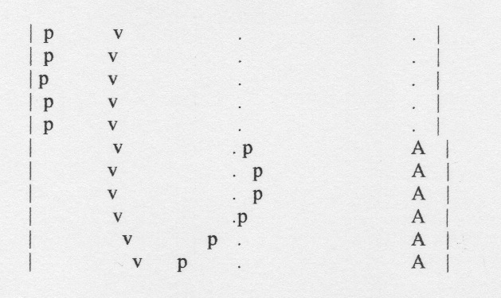
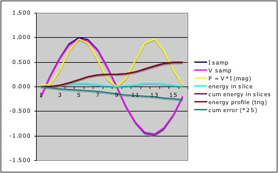

>>> Before committing to this design, please read my comments about the burden resistor value here <<<
Based on the standard V&I sketch which uses calcVI() in EmonLib, I’ve had a system in place for the last couple of months which diverts surplus PV power to our immersion heater. This system has proved to be both effective and reliable, and I am most grateful for everyone who has helped me along the way. The main downside to this arrangement is that it requires an expensive item of third-party kit to distribute the power. (I know that others have found cheaper ways, but my Carlo Gavazzi unit cost me £70).
Other contributors to this forum have shown that a standard triac can be easily controlled by an Arduino. By using a zero-crossing detector such as the Motorola MOC3041, it should be possible for the Arduino to allocate mains cycles directly to the load rather than delegating this task to a separate device.
A Mk2 system of this type has been working in our garage for the last few days. The sketch and a schematic diagram are attached, its main features being:
- a comprehensive 'debug' mode which allows real world conditions to be simulated ;
- a continuous mode of operation, for both measurement and distribution of power;
- an "energy bucket" concept which gives precise control of surplus power;
- interleaved windows for measurement and generation, each only 20mS;
- a rapid response time to changing conditions (<50mS);
- suitable timing for 'arming' a zero-crossing trigger device;
- a single LPF which determines the dc-offset of raw V&I samples;
- a programmable safety margin for biassing import v. export;
- minimal calibration is required.
As supplied, the sketch is in ‘debug’ mode. This allows the code to be put through its paces without requiring any additional hardware – just the Arduino. When running in this mode, voltage and current samples are synthesized, as is the operation of the triac. To convert it to ‘normal’ mode, just comment out the #define DEBUG statement.
The algorithms for measuring and distributing power are linked by an ‘energy bucket’ variable. Surplus energy, as measured at the supply point, is recorded in this variable, and power is only allocated to the immersion heater when the available energy has reached a pre-determined level. The energy bucket is updated after each complete cycle of the mains, and a decision is then taken as to whether the triac should be ‘on’ or ‘off’ during the next cycle.
To minimise the response time, the single-cycle (20mS) windows for measuring and distributing power are interleaved. If sufficient energy is not available, the triac will be ‘off’ from the next zero-crossing point, just 10mS after that information has been gained.
In the standard EmonLib code, there is a separate high-pass filter (HPF) on each of the voltage and current streams. I’ve taken a different approach (thanks Robert for the suggestion), and have instead implemented a single LP filter which allows the DC bias to be accurately determined. By updating the LPF only once per mains cycle (my idea!), its performance is nigh-on perfect, with no attenuation or phase shift.
Too good to believe? Well, the LPF is not acting alone. There is also a standard HP filter which acts just on the voltage stream. The purpose of this secondary filter is to group the voltage samples into cycles so that the LPF can be accurately updated. Unlike the LPF, the HPF can always be relied upon to start up correctly. Together, they form a great combination.
A single (buffered) reference is used for both the voltage and current sensor as shown on the schematic diagram. The LM358 runs from the Arduino’s 5V rail and provides a rock-steady reference point. If separate reference circuits were to be used, the single LPF approach would then not be appropriate.
[Update: If measuring only "real power", which is what the utility meter does, the single LPF would be fine when using separate references. This is because any DC offset in the current samples is removed by the maths. For other calculations such as Power Factor or Irms, the dc-offset of each sensor must be dealt with independently.]
The energy bucket has a nominal capacity of 3600J, or 0.001kWh, with power only being allocated when it is at least half-full. To ensure that a small amount of export to the grid is maintained, a programmable safety margin has been included; this acts as a leak in the bucket thereby reducing the rate that ‘on’ cycles can be allocated to the immersion. For anyone with a nervous disposition, just increase the value of safetyMargin_watts.
So how accurate does this system need to be? Not very, is the short answer. Because there is only one place where current is measured (flowing into and out from the grid), any inaccuracy will be cancelled out. Once the distribution algorithm has reached the operating point, ‘on’ cycles will be allocated at the appropriate rate for the prevailing conditions regardless of any absolute error in the measurement system (it just needs to be linear).
In a place such as this, if I were to suggest that no calibration is required at all, I’d probably get shot down in flames. So, here’s how it works:
In ‘debug’ mode, the synthesized values are directly equivalent to Volts and Amps. By mutiplying pairs of V&I samples together, this gives the instantaneous power in Watts. By adding a mains cycles’ worth of instP values together, and dividing by the number of samples, this gives the average power during that mains cycle, also in Watts. Dividing by cyclesPerSecond = 50 gives the energy gained or lost during that individual mains cycle, in Joules. This energy contribution is then added to the existing contents of the bucket without need for further calibration. In debug mode, POWERCAL = 1.
In ‘normal’ mode, the sensitivity of the measurement system is affected by a variety factors. My simplistic approach, however, says that it is only “energy” that needs to be calibrated. By experimenting with a few small loads, I soon found that a value of about 0.085 allows my system to track real-world energy flow. With a 40W bulb connected, my bucket ‘fills’ at around 40J per second. Moreover, when the light goes off, the bucket’s value remains constant to within a few tenths of a Joule per second – there's minimal unintended leakage. So, before adding my measured power contributions into the energy bucket, they are multiplied by POWERCAL = 0.085. The units of this parameter are Joules per ADC-unit squared, but what about its value?
Using any of tools that have been posted recently for recording the range of raw sample values, the extent to which voltage and current are being over- or under-read in terms of ADC units can be determined. From the voltage and current samples taken while powering my 3kW kettle, I appears that I am ‘under-reading’ voltage by 471/678.8 and ‘over-reading’ current by 535/35.36. Taking the inverse of each of these ratios gives an overall value of 0.095, which is close enough to 0.085 for my purposes.
One final bit of calibration is needed, this being to determine an appropriate moment for arming the external trigger device. Because my system under-reads voltage by a factor of 471/678.8, my voltage samples (after removal of the DC-offset) need to be multiplied by the inverse of this ratio to obtain the correct value in Volts. VOLTAGECAL = 1.441 is therefore applied before checking whether the voltage is at a suitable value for arming the trigger (for the MOC3041, this is a minimum of 20V beyond the +ve going z/c point.)
The hardware is entirely straightforward, photo attached. The input circuitry is still on breadboard but will no doubt be transferred to strip-board in due course. With the 40W triac bolted to an offcut of aluminium tubing, it gets pleasantly warm when the PV gets going, but is rarely too hot to touch. A better heatsink, with vertical fins, would be a nice addition.
Re: Mk2 PV Controller, with triac
One thing's a certainty - a filter to take out the 5.5 Hz component isn't going to be easy.
Thanks for doing that model. I need to learn LT Spice. Do we need to take out the 5.5Hz as I assume the harmonic spec (not read it) is all about harmonics of 50Hz and anything less than 50Hz is ignored?
But <50Hz is on the realms of the flicker spec instead and 10 and 5.5Hz are undesirable, or illegal if it causes too large a voltage dip.
I’d say always use a metal enclosure for fire safety with these projects. A loose terminal block screw could lead to sparking and heat enough to start a fire. The shock risk with metal may be increased if not well earthed but on the whole the fire risk is more severe.
Re: Mk2 PV Controller, with triac
Lead length
Some designers of units like this have reported that they can extend the CT cable by >50m and it makes little or no difference as long as twisted pair cable is used. But on my design I have found that about 10m is the limit with either screened twisted pair microphone cable or screened CAT5/6 cable. Although it still works with 20-30 m the unit has to be biased towards 200-300W of export if import is to be always avoided.
As I use the same basic input circuit as everyone else with a 10 times gain op amp for buffering to processor and another op amp for a 2.5V reference I fail to see where the problem is. Any clues? I wonder if increasing the burden resistor value from 18 ohm and reducing the op amp gain may help. Anyone found that they can use long leads with the no op amp solution?
I use a small capacitor across the processor input acting like a low pass filter at 1kHz to take out the worst of the spikes that get delivered, especially in the phase controlled mode. I suspect that the longer the cable the worse the high frequency noise becomes. It could though be argued that this filtering is unnecessary as the digital sampling should average out high frequency noise to zero over a few mains cycles.
Re: Mk2 PV Controller, with triac
Is that the way you have to go?
I've extended the Arduino output 50m to a remote optocouple/triac with no problems.
Re: Mk2 PV Controller, with triac
Lead length Some designers of units like this have repo...
Perhaps they are using a more sensitive CT (or lower range?) - is the burden resistor at the CT end or the PCB end?
Re: Mk2 PV Controller, with triac
fewyatt
Why are you getting a bias towards 200-300W of export? Do you read a current when none is there - is it those h.f. spikes?
I think you want to keep the impedance of the loop low, not raise it by increasing the burden value. What have you done with the cable screen? I'd earth it at the processor end only. The cable alone will be giving you a couple of hundred pF per metre of shunt capacitance, to deal with noise spikes you could try adding a couple of ferrite beads (with several turns through the bead) on the c.t. cable at the processor end to give you a rudimentary L-section filter, and then maybe add your extra capacitor downstream of those. If you're really desperate you could quite easily use a balanced input microphone pre-amp (with 10 x gain, not the usual 100+ times!) instead of the (unbalanced) op-amp you have to interface the c.t. to the rest of the circuit, but the dedicated ic's available aren't likely to run on 5 V.
Re: Mk2 PV Controller, with triac
I've a second "batch" of PCBs for calypso_raes original design if anyone wants:-
Two etched and drilled boards £10
Two built up boards £45, with transformer (currently back stock).
Two built up boards without transformer £42.
Finished unit £200 as per my post, (for experimental purposes only).
The made up boards are the no soldering option and have flying leads for the Arduino and an LED to work with pin 13, and a pre wired jack socket for the CT. No hardware, Arduino, CT etc will be supplied with this option those you will need to source yourself.
Re: Mk2 PV Controller, with triac
Hi Richmc, can you put me down for 2 sets of pcbs (2 x £10 option).
I've promised to make a couple of these up for friends and can't be bothered to fiddle with veroboard!
Can you let me know payment details? Paypal is easiest for me...
Re: Mk2 PV Controller, with triac
No problem Tim, will PM tomorrow. PayPal is good.
Re: Mk2 PV Controller, with triac
To deal with noise spikes you could try adding a couple of ferrite beads (with several turns through the bead) on the c.t. cable at the processor end to give you a rudimentary L-section filter, and then maybe add your extra capacitor downstream of those.
My design philosophy went like this:
• Keep impedance low at 18ohm to cut pickup and have a modest 10 times gain at op amp to boost it again.
• Burden resistor at CT end so cable resistance is not part of the burden. Not sure if it improves the noise rejection. But would having say 50 ohm at op amp end too help to suppress the higher frequencies? Have tried the burden at the other end instead and it does not seem to affect it much.
• 3000:1 CT gives about 0.1V pp at 13amp so it’s 1Vpp after op amp at A/D input.
• High impedance 100k differential (balanced?) mode input on op amp so common mode pickup of the 50Hz house field is rejected. But would making the impedance say 1k ohm suppress the higher frequencies? All depends if the source impedance for these frequencies is 18ohm or something else.
• Earth screen at op amp end. Earth any spare cores in the CAT5 cable.
• Simple 1 kHz capacitor filter after op amp. (May be better before the amp. 10u across the input gives 1kHz at 18 ohm impedance.)
• Keep everything in one box so putting the low current side at CT and SSR at immersion not an option.
Anything wrong with that? What is the effect of the cable capacitance?
Despite all this an oscilloscope shows a large level of hash at the op amp especially at switch on of the load in phase controlled mode, despite large EMC filter. Some of it appears to be coming from RFI inside the unit from the high current side as much still there with a short lead, or that could just be a reflection of the harmonics on the mains caused by the switching. These results are mostly obtained from a phase controlled operation but in burst mode it’s much the same although the hash is less.
One possibility is that some spikes are so high that they saturate the op amp causing it to misprocess the 50Hz fundamental signal. A pair of back to back diodes across the input would cut those to +/- 0.6V but with a 10 times gain that is still too much. Might work with shottky diodes and a 5 times gain with 36ohm burden.
Although there is a large harmonic signal on the A/D input it is should be symmetrical so sampled and averaged to zero power as it is multiplied by a voltage signal at the fundamental. Even high frequency hash should be averaged to zero. But I guess there are interactions between the sampling rate (10,000 samples per sec; what rate does Arduino use?) and harmonic frequency so maybe some are not zeroed out. Also are frequencies that are not exact multiples of 50Hz zeroed?
The immersion load oscillates +/- 200-300W so a software offset of 300W has to be used to keep it never importing. With a short CT lead it will work on a 100W offset. That is with phase control. With burst fire it's about half that.
So regarding the ferrite beads, as I am try to suppress differential mode, should I use one bead and feed both wires through it in the same direction? Or are your 2 beads better? Or I have a standard mains common mode choke that I could try both as is and with one side reversed to make it differential mode.
Re: Mk2 PV Controller, with triac
It looks as if you're doing most of the right things. Which makes it difficult.
Let me know how you get on, meanwhile I'll look up some old articles on screening and earthing etc in case I've missed something obvious.
Re: Mk2 PV Controller, with triac
Hi All,
Having finished with the soldering iron, I'm now testing the current and voltage sensor inputs. The latter looks okay, but I'm struggling to detect any signal from the CT. I've used the min/max tool here, but when I switch the 3kw kettle on, the feed from the CT around it's cable makes no difference to the values previously being reported (typically min=492,max=504). And this is with Robin's suggestion of dropping VRef to 0.55 and using INTERNAL (1.1v) for the analogReference.
How likely is it the CT is suspect? It's a YHDC SCT-013-030, which has a 39Ω built-in burden. When measuring the output directly from the CT, the meter doesn't change from 00.0.
Is there a way I can check the integrity of the CT?
Andy
Re: Mk2 PV Controller, with triac
Check the windings of your ct with an ohm meter, my efergy ct reads 40.6 ohms also double check your soldering on the circuit board, i find a magnifying glass helps find any stray strands of solder that may cause a short.
Re: Mk2 PV Controller, with triac
Stupid question: Are you passing just one core of the supply cable through the c.t.? If you're clipped round a twin cable with supply and return going through the c.t., the fields will cancel and you see nothing.
Connect a multimeter on the mA range directly across the c.t. output, and you should read (very roughly) 1 mA per amp of primary current .
What resistance do you read looking in at the c.t. secondary winding? If the secondary resistance is 100 Ohms (a likely figure), you should see 39 // 100 = 28 ohms or so (i.e significantly less than 39 Ohms in any case). If you see 39 Ohms +/- 5% I'd suspect (a) soldering inside the c.t. or (b) an open-circuit secondary.
Re: Mk2 PV Controller, with triac
I have a spare 030 at home (at work for the night!) will check the correct resistance for you in the morning & post.
Re: Mk2 PV Controller, with triac
Thanks for your replies. Robert - you were right to ask! <sheepish>I tried it on the supply lead into the house and all is well. Now getting a good spread of values.</sheepish> That's me wearing the dunces hat for the day...
Re: Mk2 PV Controller, with triac
Is your differential input truly balanced - impedance-wise?
Thanks you for all the feedback it’s going to take for some time to experiment a bit to narrow down the problem, not helped by oscilloscope measurements being quite tricky to do accurately. I suspect the loading from the probes and EMI pickup on the scope distorts things.
My circuit is basically as per differential amp here http://cnx.org/content/m13778/latest/ except the instead of earthing bottom end of R2 it’s fed by 2.5V from an op amp circuit similar to calypso_rae’s one. The burden resistor goes across the input. And the output is fed to 10k trimmer for calibration also connected down to 2.5V, after which a 10k resistor and 0.01u provides the 1 kHz filter. I was wrong above: R1 is 10k and R 100k so that makes it 10k or so input impedance. I wonder if LTSpice can tell me if this is impedance matched?
As the 2.5V rail is the effective analogue earthing point I wonder if connecting the cable screen to 2.5V might be better than to mains or PCB earth. Also should the mains earth be disconnected from the PCB 0 volt rail analogue/digital earth? In calypso_rae’s circuit I assume the low voltage side floats as it’s supplied from a DC brick, whereas mine is anchored to mains earth. I did that for safety reasons as if you accidentally get a mains to PCB short you are more likely to get 240VAC on the CT wires if the PCB floats.
Re: Mk2 PV Controller, with triac
Glad to see you have it sorted Andy, no need to feel embarrassed we've all been in a similar place at one time or another. Anyway for info using a Fluke 77 and letting the reading settle for a few seconds I have a resistance of 37.2ohm across the YHDC SCT-013-030 CT.
Re: Mk2 PV Controller, with triac
richmc
37.2ohm across the YHDC SCT-013-030 CT ! ! ! That rather implies that the internal burden isn't 39 Ohms. I thought that number sounded wrong - when I checked back Robin had found 72 Ohms (62 + 10) burden which would make the winding resistance about 76 Ohms - believable.
Re: Mk2 PV Controller, with triac
fewyatt
That circuit (Fig.8 in your link) isn't balanced! Not exactly, my notes say the resistors need to be matched to within (wait for it!) 0.01% if the CMRR is not to be degraded - and remember the output impedance of the op-amp will come into play in the inverting side, and the impedance of the 2.5 V reference in the non-inverting side; the impedance therefore looking in at V1 will be different (not much but enough!) than at V2. Normally when precision balance is a problem, two identical followers are used in front of that stage - it's easier then to match the input impedances and the balance problem can then be addressed by a tweak-pot in the differential stage.
I wouldn't dwell on this too much - I think the real problem lies elsewhere. If all else fails, then you might need to return here.
The only really helpful bit I found in my notes is a suggestion to draw out the circuit, including all noise sources (it rather assumes you know where they are - or might be!), cable resistances and capacitances etc, and then put earths at various places and see where the current paths and voltage drops are created, and where voltages add up.
It did point out, counter-intuitively, that in certain circumstances connecting the screen to the 'cold' side of the signal at the source (i.e. the c.t.) could be the best solution. However in the audio field (which this closely resembles), it's normal to earth the screen at the amplifier end.
I think you need to carefully check that you don't have an earth loop somewhere (your 'scope has blood on its hands! - what do you see when you earth via the 'scope only?)
I wouldn't worry about impedance matching - that provides maximum power transfer and at the same time maximum loss in the source impedance. Were you worried about reflections in the cable?
If you have a small transformer (say a small mains transformer with 9-0-9 V or higher secondary - you want a ratio about 10:1 or less), you could try replacing the amp with that (as an experiment!). Wire the c.t. to the 18 V ends, and use the mains side to connect to 2.5 V and your trimmer pot. See how much pickup you get then?
Re: Mk2 PV Controller, with triac
Actually the burden resistor is 62 ohm that would make the winding 93 ohm.- believable? yes.
Re: Mk2 PV Controller, with triac
Hmm, it looks as if the burden resistor is "adjust on test" to meet the output voltage spec. 93 Ohms fits well with my theory that the SCT013-030 is an SCT013-000 with an internal burden resistor added (the -000 I have is 99.3 Ohms secondary). Now if you get near enough 50 mA per 100 A with a low impedance ammeter shunting the burden, that's more good evidence of my theory!
Re: Mk2 PV Controller, with triac
Knowing how supply meters work is clearly of some importance when diverting surplus PV to a dump load.
Unfortunately, the behaviour of supply meters while exporting is not well documented. My Mk2 design is loosely based around the observed behaviour of our own meter - a Landis + Gyr 5235A - but other digital meters may behave in a different manner.
If supply meters could be temporarily removed for testing, then it would be a straightforward matter to understand in detail how they work. But with them being permanently connected to household supplies, this is not possible.
The main source of information from a digital meter (in fact, the only source for most users) is the LED. When surplus PV is available, this LED sometimes comes on to show "Reverse Energy Detected". In simple terms, that means that you're exporting power. OK, but do you want to be exporting any of your surplus power? I certainly don't, at least not while our water could be usefully heated!!
To aid our understanding of digital supply meters, I've built a virtual one which is available at http://openenergymonitor.org/emon/node/857#comment-6442. It's a simple sketch which runs on an Arduino and needs no additional hardware. Everything is controlled from the Serial Monitor, just follow the on-screen guidance. Using this tool, anyone should be able to tweak the model to make it match the observed performance of their own meter.
With a better understanding of how supply meters actually work, power-diversion circuits can then be designed in a more informed manner. Take it away guys ...
Re: Mk2 PV Controller, with triac
"If supply meters could be temporarily removed for testing...."
a) wait for planned maintenance power cut
b) pull the mains fuse and isolate. I must have done this a hundred times and I`ve never been hassled by DNO for breaking the seal.
Re: Mk2 PV Controller, with triac
Or better still, do what was originally done for these forums to start this discussion on meter behaviour and pick one up on Fleabay, and experiment to your heart's content.
Re: Mk2 PV Controller, with triac
Thats a good top tip, they aren't expensive. But make sure it comes with a manual.
Re: Mk2 PV Controller, with triac
Published manuals don't give much guidance about the aspects that we're interested in. Thankfully, supply meters do appear have some degree of tolerance when dealing with "reverse energy". It is this tolerance which allows surplus energy to be diverted to a dump load using burst-mode circuitry without charge. But if we want to understand the meter's behaviour in detail, I think we'll need to work this out for ourselves.
Has anyone tried out the "anti-creep" logic in my simulation tool? As posted, the timeout period was set to 60s but would be much longer than this in practice.
Re: Mk2 PV Controller, with triac
Unfortunately, the behaviour of supply meters while exporting is not well documented.
I find the best place is the datasheets for the chips that form the basis of these meters. See for example http://ww1.microchip.com/downloads/en/DeviceDoc/22011B.pdf for a pulse meter or http://ww1.microchip.com/downloads/en/DeviceDoc/25048B.pdf for a serial output that can be processed to clock an LCD. Other manufacturers do similar chips.
Even so they seem coy about integration times. Maybe the IEC 62053 international energy metering specification will say.
Under export my wheel meter with anti reverse facility goes backwards about one turn then oscillates rapidly a couple of degrees back and forth under burst fire, clocking up no import or export.
Re: Mk2 PV Controller, with triac
I think you need to carefully check that you don't have an earth loop somewhere (your 'scope has blood on its hands!)
Scope has no earth.
Resistors need to be matched to within (wait for it!) 0.01% if the CMRR is not to be degraded
I read similar but we are not aiming for an instrumentation grade amp here. I use 1% resistors.
Remember the output impedance of the op-amp will come into play in the inverting side, and the impedance of the 2.5 V reference in the non-inverting side
As both the R2 resistors are connected to the outputs of op amps of the same type in one package would not the output impedance effect be minimal? Whilst it might not be truly balanced is it not better than a non differential one?
I'd filter before amplification.
Rather than put 10u across the burden I guess that 0.01u across the input 100k R2 should do the same.
Re: Mk2 PV Controller, with triac
Yes, of course, but if it really is common-mode rubbish that is getting in, you might find it will pay you to include a trimmer pot in one side so that you can improve the balance. I take it you are no nearer to finding the source(s)? Have you tried an interposing transformer at the amplifier end?
Re: Mk2 PV Controller, with triac
fewyatt: Under export my wheel meter with anti reverse facility goes backwards about one turn then oscillates rapidly a couple of degrees back and forth under burst fire, clocking up no import or export.
That behaviour sounds perfect to me. While the energy bucket is filling up to the 1800J level, the meter should go backwards. Then while the Mk2 algorithm maintains this level using burst-mode firing, the meter should jink rapidly back and forth but not actually go anywhere. It's great to hear that this behaviour can actually be seen with a disc meter. When using a digital meter, all of this useful detail is hidden).
It would be really interesting to know whether the disc ever drifts in either direction when different amounts of surplus PV are available. If no noticeable amount of drift is ever seen, that means that the net levels of import and export are being matched perfectly across the full range of operation . At either end of the 0 - 3kW range, when frequent small measurements of current are being compared against infrequent ones that are very much greater, I think that would be a remarkable achievement for such a low-tech approach.
Re: Mk2 PV Controller, with triac
"It would be really interesting to know whether the disc ever drifts in either direction when different amounts of surplus PV are available. "
Due to my aforementioned long CT lead problem I am really working with about 200W net export whatever the actual immersion power, but the wheel does not drift backyards because it’s presumably hitting its antireverse stop when immersion off and moving a couple of degrees forwards when immersion on. The symbol on the meter front that signifies that it has a stop looks like a standard pawl/ratchet. I don’t really understand how this antireverse mechanism works as it seems to allow a turn or two backwards before engaging. Suspect it’s actually a pawl with a toothed disc attached to a gear one or two removed from the wheel, so when the wheel goes backwards it can take a while before the next tooth lines up with the pawl.
If true I could operate with much longer bursts of pulses (up to about one turn of the wheel) to slow down the flicker but would have to maintain a slight import to keep it off the stop.
I have 3 electric meters to measure export and one says that integrated over 5 minutes the 200W holds good, but an EcoEye PV can flick between import and export sample to sample (4 second samples). I don’t really believe it. It might say -250, -200, + 325, -150, +230 etc. It could be that in one 4 second period you get say 20 full cycles of immersion and only 18 in the next so it’s not the same reading each time. More likely it isn’t even a multiple of complete full cycle in the sampling window.
Remember that I am not using your software but only the overall bucket concept.
Re: Mk2 PV Controller, with triac
fewyatt, when you said that your wheel meter "oscillates rapidly a couple of degrees back and forth under burst fire, clocking up no import or export", I made the assumption that it was not up against the endstop. I had forgotten that you seem happy to accept 200W of permanent export.
When using a digital supply meter, it doesn't seem possible to prove that energy is not being exported while the system is nominally balanced. Maybe there's someone out there with a non-reserving disc/wheel meter who is running my standard Mk2 code ...
Re: Mk2 PV Controller, with triac
"When using a digital supply meter, it doesn't seem possible to prove that energy is not being exported while the system is nominally balanced."
You can prove it if you have an accurate meter that can cope with the waveform you are shoving its way and read a true zero for a balanced position. One of my 3 can probably do it. Then if the utility meter is not clocking up you are not importing even in short bursts.
Or get a normal electricity meter and wire it in backwards in series with the utility meter. One will register import and the other export. Neither should be moving/flashing when balanced.
Re: Mk2 PV Controller, with triac
Most of us don't feel able to wire anything in series with our utility meters. The meter's connections are protected with seals, and that's that. OEM is supposed to be non-intrusive.
I've no reason to suppose that my Mk2 rig is anything other than balanced. It is certainly not biassed towards import, otherwise occasional pulses would be seen at the meter. It could however be leaking energy to the grid, but with a digital supply meter there is no easy way of knowing.
If anyone were able to verify my Mk2's performance using a disc meter (with or without the non-reversing feature), that would be great.
TIA (I won't ask again ...)
Re: Mk2 PV Controller, with triac
I have a digital meter and can categorically say it does not increment whilst the Mk2 is firing, I checked it over a 5Hr period. And it certainly doesn't seem to export any significant power as seen by my Eco Eye Smart PV less than 50W at most.
Re: Mk2 PV Controller, with triac
The meter's connections are protected with seals, and that's that. OEM is supposed to be non-intrusive.
Depends on your house. On mine there is an isolation switch at the main fuse so it’s easy to isolate, then pull the tails out of the CU to wire in the extra meter. No seals there. Bending the thick tails was the hardest bit.
Over the last 11 months my revenue grade meters show that 44% of the PV generation was exported. That is not far out from the 50% deemed. I have no equivalent figure from before fitting a controller. Reasons it is not being lower include:
• We don’t use a lot of hot water
• We have a solar thermal system too albeit not a very powerful one.
• We are working with 200-300W minimum export.
But we have not needed to run any gas backup for about 6 months in spring/summer and the same for last year. Less than once per month in that 6 months a one hour electricity top-up has been needed. When we just had solar thermal almost daily top-ups were needed.
"as seen by my Eco Eye Smart PV less than 50W at most."
Does your Eco Eye fluctuate sample to sample quite a bit like I reported above?
Re: Mk2 PV Controller, with triac
fewyatt, having checked our setup, it should indeed be a straightforward task to add an extra meter (for measuring export) in series with our existing one. When our PV was installed, we acquired a Henley block as shown in the pic. The cover can be easily removed, and it appears that the wires inside could then be withdrawn. With a 2-pole breaker immediately upstream, this wiring can be fully isolated from the mains without needing to break any seals. And I mustn't forget to isolate the PV!
A disc-style meter for export might be best because this would give continuous readings and reveal any tendancy for drift. However, a digital one would give pulses if any significant amount of export occurred and these could be monitored continuously by the sketch. But the dreaded anti-creep mode would no doubt complicate matters. On balance, I think an analogue meter would probably be best for this informal use.
(psst, anyone got a spare meter?)
Re: Mk2 PV Controller, with triac
I did have a spare disc meter but not sure if I kept it. Maybe still lurking in the loft. It’s so old it probably does not have an anti reverse feature.
Re: Mk2 PV Controller, with triac
That would be fine. When fitted in the conventional direction, its readings could be compared directly against those from our digital meter. Not ideal if it has 973 revolutions per kWh, but nothing that a calculator couldn't handle. If left in place for a few days, a reasonable comparison between the two should be possible.
When fitted in the reverse direction, a disc meter should provide an immediate indication of whether any energy is leaking away when the Mk2 algorithm is active.
I see that digital-style meters are readily available on eBay, though not necessarily of a specific type. Maybe I should take the plunge and buy one to play with ...
Re: Mk2 PV Controller, with triac
robin
I have a spare disc meter (reversing) which I`m happy to send you. PM me your address.
Years ago I thought of using a disc meter as the sensor to detect import/export electromechanically and tie this to a dimmer. I`m sure it would work but my lack of electronic knowledge held me back.
Re: Mk2 PV Controller, with triac
This is my first post and I am not sure where it should go but as it relates to this project this is where I have chosen.
First, hello and congratulations for all the fine work that goes on here.
I don’t yet have a PV system but intend to get one so I can join in the fun. Like many others I am attracted by the idea of an energy dump and Robin’s MK2 circuit looks like the way to go.
The reason for this post is to seek the group’s opinion of my approach which is slightly different from the usual idea of routing the surplus PV power to an existing immersion tank.
This drawing shows what I intend to do. The idea is that surplus PV power will heat a new additional immersion tank that is filled with radiator water plus inhibitor and is connected in line with the return pipe to the boiler.
As this tank will not hold water that reaches the taps it will be allowed to reach boiler output temperature before the tank thermostat is activated. This approach will allow more kWh of power to be absorbed compared to heating domestic hot water directly.
An additional advantage is that the very hard water in this area will not come into contact with the heating element therefore it will remain free of lime scale and work more efficiently.
On cold days any surplus PV power will be distributed to both the hot water tank and the central heating radiators.
Apologies if this is a recognised technique but I have not yet seen it described anywhere. Alternatively if there is an obvious flaw in the idea it would be good to find it while at the planning stage.
The diagram does not show an expansion pipe on the new tank. There will be a pressure relief safety valve but I don’t see why an expansion pipe would be required. After all the radiators don’t have one.
Re: Mk2 PV Controller, with triac
I think in theory this would work but not ideal as after a few minutes with the pump running the heat source will be cold. in my opinion you would be better to stick to heating up just the hot water cylinder as the controller will take too long to heat up your tank again to continue using it to heat your radiators.
Re: Mk2 PV Controller, with triac
Hi Brian D,
Sorry, my basic (PowerPC) Mac won't open your document. It may be helpful if you could upload it to the forum using "File Attachments", then Browse and Attach, You also need to click the List box otherwise no-one can see it. If you can get it right first time, you're doing better than most!
I share madmurg's reservations about using surplus PV to heat radiators. The DHW tank does a great job at accumulating small amounts of thermal energy for subsequent use, but radiators are intended for distributing heat now, not later. These days, I gain great satisfaction when steaming water appears out of the hot tap at lunchtime. All those thousands of 60J pulses ...
Re: Mk2 PV Controller, with triac
OK I will give that a try.
Brian
Re: Mk2 PV Controller, with triac
I have to agree with the above comments, but also have a simpler and cheaper option to offer.
Set up calypso_raes system to heat the water as normal, but if you have towel rails in the house get a couple of electric elements (Ebay) they are available up to 600W and there is no reason why you can't put two in each towel rail you could wire them to come on together and have the usual switch to turn off power to the elements, The triac specified will handle both the water heating and the rad elements and will preheat the water in the heating system, you will need to ensure the heating pump is being called at the same time so the towel rails don't get too hot, if you have two rails in the house (say main bathroom and en suite) you would have up to 2400W available when the sun shines.
Re: Mk2 PV Controller, with triac
My use of the term “radiator water” may give the wrong idea. Let’s call it heating fluid.
The additional immersion tank will be fitted in series with the heating fluid return pipe to the boiler. The radiators are all on zone controlled circuits with separate two port valves therefore in warm weather none of the heating fluid will circulate through them.
When available, surplus PV power will be applied to the heat dump immersion heater and the water temperature will be allowed to rise to 75 deg C. This will take 8.8kWh for a standard 117 litre tank if starting from 10 deg C.
The original immersion tank thermostat will continue to be set to 55 deg and when activated will enable the boiler as usual. The water entering the boiler will now be preheated and on a hot day will be at 75 deg C therefore the fully modulated condensing boiler will either not fire up or will burn a very small flame.
The heating fluid circulating around the heat exchanger coil in the original immersion tank is effectively transferring PV energy from the heat dump to the domestic hot water and none of it is being lost in the radiators.
Obviously in winter the situation is different and PV power will reach both the radiators and the domestic hot water but that is whole idea.
The big attraction of this approach is that if you were to start with a cold system on a sunny day the energy storage capacity will be about 14.9kWh.
Hopefully my explanation is a bit clearer now.
Brian
Re: Mk2 PV Controller, with triac
Brian D, thanks, I can see your diagram nicely now as an attachment.
I take your point that the thermal capacity of your entire system is greater than just for the DHW tank. The main drawback for me is that no benefit can be gained until the boiler is switched on. This seems quite a limitation of your design. Although our boiler has never been on during the summer months, our DHW tank has fully heated up on dozens of occasions (including today, after doing two loads of washing).
A condensing boiler works most efficiently when there is a high temperature differential. It becomes less efficient as the temperature of the incoming water goes up. So pre-heating your boiler's water may not have quite the benefit you're hoping for.
I think your panels will be wired in series, probably in two separate strings of around 500V apiece. Our inverter can only cope with a single string, and we're pretty much at the maximum with 11 panels. But I know that larger units can deal with multiple strings.
Re: Mk2 PV Controller, with triac
Thanks Robin.
I agree that no energy can be extracted from my proposed heat dump until the pump runs. The pump is controlled by the boiler and the boiler activates the pump a short while after the DHW tank thermostat clicks on.
The fact that the boiler is enabled (but not necessarily burning gas) and the pump is running means that if the heat dump is hotter than the DHW tank then energy will transfer from the heat dump through the not yet burning boiler to the DHW tank.
The boiler is highly programmable being capable of monitoring either the flow or return temperatures to determine when to open the gas valve. When the gas valve is open the burn is regulated to optimise the efficiency for a reduced flow/return temperature differential. My expectation is that in summer the boiler will simply not open the gas valve. Some twiddling with system variables may be required to achieve this. The important thing is to ensure that the heat dump thermostat is set higher than the internal boiler trip temperature (not the DHW tank thermostat)
A potential problem that I can see is when the heat dump temperature is below the temperature of the DHW tank. Fortunately the boiler return temperature is quite cool without the heat store therefore it’s very unlikely that heat will flow out of the DHW tank into the heat store.
If you look at my diagram in comment 6523 you will see that my panels will not be wired in series but will use micro inverters.
So far I am encouraged as no one has found a fundamental flaw in my proposal. However, there is still time :)
Brian
Re: Mk2 PV Controller, with triac
"If you look at my diagram in comment 6523 you will see that my panels will not be wired in series but will use micro inverters."
Beware of micro inverters, I know of one person who has had them for 6 to 8 months and has had three fail, each time it's meant a full scaffolding job, he didn't have to pay for this but it ruined the use of his garden throughout the summer.
Re: Mk2 PV Controller, with triac
Sorry, I'd never heard of micro inverters. Are they of benefit when some panels may be shaded and not others?
Re: Mk2 PV Controller, with triac
Yes - Micro inverters one for each panel and Yes they allow unshaded panels to produce at full power while the shaded ones are nearly off
Re: Mk2 PV Controller, with triac
Micro inverters. Yes indeed they do appear to have benefit when there is a variation in the output from the various panels.
I know that MPPT is offered in various ways for series connected panels but for best possible performance MPPT electronics devoted to each panel with its own inverter is in my opinion the most efficient option.
My choice for this system is the enecsys micro inverter. It would be interesting to know which micro inverter Rich’s friend had the bad experience with.
The enecsys provides wireless monitoring directly from each panel which makes it easy to identify panel specific issues when they occur.
Another reason that micro inverters appeal to me is that my panels will be distributed over a wide area and I do not want a high Voltage distributed DC system. This being especially important regarding electrolytic degradation of connectors as I live near the sea with salt spray in the air.
Maybe I could get a job as an enecsys saleman :)
Re: Mk2 PV Controller, with triac
There was a dodgy batch of Micro-inverters a while back, but from everything I've heard they are much more reliable now.
At least, I HOPE they are! I have a roof full of them, although mine are the Duo version (two panels each). Besides avoiding shading, they also have the benefit of per panel (or pair) monitoring (so dead easy to spot if a panel has gone bad, or is covered in seagull crap! - you'd never know that with a string inverter). Plus, unlike a typical string inverter, they are designed to last as long as the panel do.
But I think we're straying off-topic a bit!
P.
Re: Mk2 PV Controller, with triac
Another micro inverter user here.
I have the Enecsys product and, ironically, for the first time since installation the RCD tripped this morning. Having reset the system and after about an hour the system was back to normal. Even with a pretty extensive warranty it got me concerned for a bit.
As I see it, if you have serious shading issues they may out perform a single or a dual string inverter but the initial cost will be higher. For partial shading they probably wont make a huge difference in harvest. You do, however, get the benefit of a 20 year warranty and, if installed smartly, in the event of a failure they are really easy to replace.
Be very careful which panels you mate them against though: the MPPT tracking range isn't that wide and if more than one set of bypass diodes trip through shading you may find that the whole panel will yield nothing. This flies in the face of the reason for having them in the first place.
Re: Mk2 PV Controller, with triac
Suitable AC-AC adaptors.
Finding a suitable AC-AC adaptor is not easy. The recommended ones seem to be unavailable. However, Mercury manufacture a plug-in 12Vac 500mA unregulated power supply. This is available from a number of retailers on Amazon marketplace at a very reasonable price.
Does anyone know if this will work in calypso_rae's circuit?
Re: Mk2 PV Controller, with triac
The important parameter is the fidelity with which the mains waveform is reproduced. One needs to be tested because that sort of information will not make its way onto a data sheet. The first warning sign is if it is specified for a 230 V supply - this usually indicates that saturation will be starting to become noticeable even at the UK centre voltage of 240 V.
Re: Mk2 PV Controller, with triac
Why is a transformer even needed? Can't it be done with a couple of (high resistance) resistors as a simple voltage divider?
To my simple brain that seems a lot cleaner and easier than messing around with transformers. And it'll give a nice stable waveform too.
Or am I missing something obvious?
P.
Re: Mk2 PV Controller, with triac
Not best practice to connect any low voltage device directly to the mains, the transformer provides isolation from the mains.
Robins circuit isn't dependent on finding the perfect transformer, I've built a number of units and have never had a problem using the Vigortronics PCB mounted transformer, possibly because it's made in the UK by a manufacturer who's aware of the 240V (or more) that we run at. Distortion is low as is any phase variation, I've tested them in the real world and am happy to endorse them.
Rich
Re: Mk2 PV Controller, with triac
Hi Paul, yes a simple resistive divider does seem an obvious way to go. While looking for greater accuracy, I've built such a circuit with just resistors and op-amps (and no earth) and it behaved very nicely. The output waveform certainly looks better than from any of the 240V transformers that I've used. Various results using this setup have been posted on this forum.
So, how important is the accuracy of the voltage waveform that the Arduino sees. For this application, the honest answer appears to "not very". The circuit that's running in our garage is simply the basic Mk2 setup with no refinements and it seems to be working fine. With a couple of spare meters to play with I should soon be able to quantify the performance of this rig. If there really is minimal leakage of energy in either direction, then why change anything?
The main problem with using a direct sensor for 240V AC is the safety factor. If the neutral connection were to fail, everything including the user would become connected to mains live. Ouch!
Re: Mk2 PV Controller, with triac
Yes, but only 'live' via a 10 megohm resistor or somesuch, so although it might tingle I don't think there would be enough of a kick to kill you.
Re: Mk2 PV Controller, with triac
No, but it might kill the Arduino! Without any earthing, I did get a couple of tingles during that phase. I used a 1 Megohm for the connection to mains live.
Re: Mk2 PV Controller, with triac
OK, point taken. Transformer is best ;-)
P.
Re: Mk2 PV Controller, with triac
Has anybody else found that not all the analogue pins on an Arduino Uno behave the same? I realise this is more a question for the Arduino community as a whole, but thought I'd ask here as I was posting anyway. Until I discovered that pins A2 and A3 record a significantly reduced range of values (e.g. 2 -> 16 compared to 185 -> 840 for the other pins) I thought something was wrong with my voltage sensor feed.
Anyway, I'm now using A0 and A1 which are fine, and was wondering if my value ranges are now good enough to run with:
Voltage: 191 - 830
Current: 373 - 649 (with a 3kW load).
I've also attached the output from Robin's Phase Diagram Tool.
These ranges could obviously be better, but after mucking about with analogReference() and vRef, this is the best so far with the resistors I have to hand (and without breaking apart the SCT-013-030 to change the internal 62Ω burden - thanks Richard for confirming the value).
Re: Mk2 PV Controller, with triac
andyjc, great to see my waveform display tool being used. I've never checked the different analogue inputs against each other, I assumed they would all perform much the same. Is there any chance that A2 and A3 may have suffered some trauma at some earlier time in their lives?
For a 3kW load, it would be nice to see a larger range of values being presented to the ADC. One way to achieve this would be to increase the value of the burden resistor - but that would be straining the CT. Another way would be to amplify the CT's output signal, but that adds complexity and would probably require an additional power supply. The best option, IMHO, would be to operate your Arduino at a lower reference voltage, either 3.3V or 1.1V. Either of these would allow your current data to span a greater portion of the ADC's input range.
Re: Mk2 PV Controller, with triac
Thanks to a disc-style meter kindly donated by noah, we can now see how Mk2 actually behaves when surplus power is being diverted.
Relevant footage will shortly be live at: http://youtu.be/WVqL30uOluQ
Re: Mk2 PV Controller, with triac
Nice demonstration Robin, I noticed the tell tale "red" displayed, as Robert explained to me that means "reverse energy detected" so the meter is seeing export.
Re: Mk2 PV Controller, with triac
As I understand it, the "rEd" display shows that reverse flow has been detected at some stage since the meter was reset. It's an anti-fraud measure, presumably to deter people from trying to clock their meter backwards.
The red LED being on can mean all sorts of things:
- from startup, the LED is on (at least, it is for a similar Ampy meter that I've just acquired);
- if the forward flow is < 15W or thereabouts for a few minutes, the meter goes into a lockdown mode, with its LED on;
- having purchased 1Wh's worth, if you drift back over that threshold, the LED goes on (that energy is still available);
- if you export more than a further 1Wh's worth, the majority of that energy is lost - but the LED stays on.
The display on the Ampy meter never shows "rEd". This may be because it's yet to experience the sensation of power flowing into its backside, as it were. I feel another experiment coming on ...
Re: Mk2 PV Controller, with triac
Can I raise a point about transformers? Several people have mentioned that you need a 240V transformer, and that 230V transformers are inadequate.
Would I be seen as rude to question this? A transformer is simply a coil of wire around a core. It really doesn't give a stuff about the voltage. It CAN get over-saturated if you pass too much current through it, but in this instance we aren't.
I really can't see how it'll make any difference whether a transformer says 230V or 240V on the label.
Am I wrong?
P.
Re: Mk2 PV Controller, with triac
Paul,
Yes, you would be rude to question established fact. And yes, you are wrong. If you don't appreciate and understand the magnetic properties of iron and how a transformer works, I suggest you read up from a reputable source, then get hold of a transformer, a variable alternating voltage source and a twin-channel oscilloscope with X-Y mode and do the test yourself.
Re: Mk2 PV Controller, with triac
Well, my apologies for the rudeness then. It's obviously such a long time ago that I did my physics degree I must have forgotten what I learned about induction law.
My scatty old brain remembers that saturation is a function of current x turns, and given the application here requires very little current I'm still struggling to see why we're hitting a problem.
You obviously understand the physics better than I do Robert - can you refresh my little grey cells for me?
And again, sorry if you thought I was being rude.
Paul.
Re: Mk2 PV Controller, with triac
The problem is you are magnetising the iron. You are thinking of load current when you suggest the current is small. But you must not forget the magnetising current which sets up the magnetic flux in the core. If you covered such things in your physics degree (mine was electrical engineering), you might remember the B-H curve that relates magnetic flux (B) to magnetising force (H). The trouble is, that's not linear, so as the voltage in the primary increases, the magnetising force increases, but as the curve flattens out, the flux doesn't increase as rapidly. But worse, it doesn't follow the same path coming down as it did going up, because the iron has been (semi-) permanently magnetised. It's the rate of change of flux that generates the voltage in the secondary, so if the flux isn't changing at the same rate as the magnetising force, the output wave shape gets distorted. If you look at Building Blocks you can see pictures of how the waveform is affected in the Mascot adapter from the shop (some others are worse!).
The real problem, as I've pointed out so many times here, is that everybody uses cheap mass-produced transformers that are designed for the mass market - where the system voltage is 220 or 230 V, and they're designed for maximum output at minimum manufacturing (and shipping) cost. And the way that's achieved is by cutting down on materials - less copper and iron. Thus you tend to have high losses and poor performance, only compounded by operating above the design values: the UK system voltage is centred on 240 V, and can rise to 253 V. That could be 15% above the design value.
I have what I think was a phase reference transformer out of a UK-designed and built thyristor drive. Firstly, it has a 250 V primary, secondly for the rated output it is huge compared with the run-of-the-mill adapter, but the performance is exemplary - it has almost undetectable distortion.
Here's the X-Y plot of a Mascot AC adapter from the shop as the input voltage is varied from about 180 V to 250 V (scale is peak voltage - 1mV per Volt for the input voltage, the output was scaled to match). The picture should be a thin straight line at 45°.
Re: Mk2 PV Controller, with triac
“The real problem, as I've pointed out so many times here, is that everybody uses cheap mass-produced transformers that are designed for the mass market - where the system voltage is 220 or 230 V, and they're designed for maximum output at minimum manufacturing (and shipping) cost.”
That’s rather a sweeping indictment of well “everybody & of all manufacturers” Robert certainly when I looked into transformer types I took a long hard look at what I was going to use. It seems to me that the transformers designed for the mass market are the “wall wart” types and that the Mascot one you seem to want to endorse is no more than the best of the worst.
The transformer I settled on, that incidentally you dismissed out of hand in a previous post, had to satisfy the criteria required for Robins design.
Firstly-that it worked and worked well.
Secondly – that it was designed and built by a company sympathetic to the unique voltage enjoyed in the UK.
Thirdly-It was cost effective, a quality that you seem to equate with shoddiness.
I think there are two things you ought to take on board Robert, firstly in this application the quality of the transformer is not as critical in some applications, and secondly saying that another poster is “rude” just because they don’t hold the same views as you and your established facts is never going to be helpful.
Re: Mk2 PV Controller, with triac
richmc
If you think it's acceptable for the OP to assert that a transformer can operate at any voltage irrespective of its design rating - I quote: "It really doesn't give a stuff about the voltage" - then I'm sorry but I beg to differ (air-cored transformers for the most part excepted, of course).
You need to take on board that not everyone is competent and has the knowledge and experience to safely handle electricity, nor to realise that statements like that are demonstrably incorrect, and for them ready-made enclosed adapters are the only practical solution.
And I don't specifically endorse the Mascot adapter - it's the one presently available from the shop, hence it was the obvious one to use to illustrate the problem. If you can find a firm willing to similarly package your chosen transformer along with the necessary approvals at a competitive price, I'm sure we'd all like to know about it.
Re: Mk2 PV Controller, with triac
1). The OP can be wrong or mistaken, that’s not something that needs to draw a belittling response.
2). The OP was specifically referring to Robins design which actually doesn’t give a stuff about the voltage (230 or 240 label on the transformer).
3). If the people we are catering for are incompetent unknowledgeable and so inexperienced that they can’t safely deal with mains voltage, how can we trust them to wire a triac?
4). I don’t actually care what transformer gets used in this project, but a decent home grown one would be nice.
5). Nobody likes to be treated like a fool, but anyone can act like one, and that’s not me or the OP.
Re: Mk2 PV Controller, with triac
The display on the Ampy meter never shows "rEd". This may be because it's yet to experience the sensation of power flowing into its backside, as it were. I feel another experiment coming on ...
Turns out that, although its LED goes on constantly in reverse flow conditions, the display of our Ampy 5196 meter never shows "rEd". Maybe there was no perceived need for this when it was build (2004).
Re: Mk2 PV Controller, with triac
Hi Robin found this-
http://www.apexengineers.co.uk/manuals/ampy5196a.html
I wonder if the "A" is significant?
And this-
http://universalmeterservices.co.uk/store/images/5235b.pdf
Bottom of page 2 states reverse detection in <5s
And this page 4 onward-
http://www.tgsolarsystems.com/downloads/5224-ampy-meters-user-manual-and-technical-specfication.pdf
Re: Mk2 PV Controller, with triac
Richmc: The OP was specifically referring to Robins design which actually doesn’t give a stuff about the voltage (230 or 240 label on the transformer).
Not that I wish to get drawn into any cross-fire, I think we all would prefer our mini versions of the mains voltage to be as accurate as possible. Although in continuous use for most of the summer, my 'telecom' adapter is particularly poor in this regard. Robert has kindly tested one of these units for me and its waveform is significantly worse than the Mascot's at 240+ volts. (It's fine below 200V, which of little practical use)
Whether to use a Mascot type of plug-in adapter, or a straightforward mains transformer, is largely of personal preference. Although the current rating is of little interest for this application, its ability to accurately maintain the waveform profile certainly is. Unless one goes for a measurement-quality component, all mains transformers seem likely to be marginally designed in this regard.
For my tidied-up version (which I really must get around to building soon!!), I intend to use a small discrete transformer which has been shown to have good performance at 245V+ mains voltage (X-Y comparison against a direct potted-down version).
Although the Mk2 design appears to be very tolerant in most regards, the system's linearity is likely to be adversely affected by any part of the input circuitry that is less than perfect. Note that while actively diverting power, my own rig does not remain in a state of complete balance as it would if everything were truly linear. Consumption of grid-power appears to drift fowards at a slow rate. Although this rate of drift may be ignored by most digital meters, such behaviour would incur a small charge for anyone who is using a disc-style meter.
Re: Mk2 PV Controller, with triac
Hi Rich, yes, I've seen that document for the 5196 already. It mentions "anti fraud" but doesn't explain what that actually means. Maybe it depends on a factory setting, and the one that I've got wasn't set up in that way. These Ampy / L+G meters appear to be sealed for life.
Re: Mk2 PV Controller, with triac
Hi Robin I hear what you say, I have tested "other options" and have found my solution, that I'm happy with.
I agree that with a bit of tweaking there may be options that are very marginally better.
My objections are not technical, but I can't stand by and see arrogance on that level go unchecked I was shocked to see the comments posted about a new border and his opinions, and I will only have minimal input on this forum as a result. please don't comment on what I've said I want the matter closed.
Deep breath, My Mk2 is happily giving me hot water on the worst of days, and whilst in operation showing zero export, hope you find the links I found of use.
Re: Mk2 PV Controller, with triac
I think all the rEd message is for is to alert the meter reader reader that someone had attempted to reverse the meter therefor trying to clock it down, so showing the meter doesn't "understand" PV export. So for us no problem.
Re: Mk2 PV Controller, with triac
richmc: I can't stand by and see arrogance on that level go unchecked
Well, you're entitled to your own views, Rich, but I for one would prefer such opinions not to be aired here in such terms. I was away during the weekend, and was disappointed to see what has been going on here of late. Having recently posted a video of Mk2 operation as never seen before (by me at least), I was looking forward to seeing some constructive postings on my return.
please don't comment on what I've said I want the matter closed.
If you wish the matter to remain closed, I think it would be best to refrain from trying to have the last word. Hopefully we can now all move on with more productive matters ...
Re: Mk2 PV Controller, with triac
Folks, please don't fall out because of my post and the reaction it provoked.
Yes, I questioned conventional wisdom. It's something I've done throughout my life. Sometimes to great effect, sometimes simply making myself look silly. I'm probably not going to stop doing it now, though.
And yes, Robert's reaction was a bit, well, brusque. But I can take it. Some people are like that, and others aren't but that's how they come across online. Some people can't tolerate (those who they think are) fools.
It's really not worth falling out over. Especially in a helping and nurturing community like this.
I've already apologised to Robert, but now I'll apologise to everyone else. Can we all be friends now?
P.
Re: Mk2 PV Controller, with triac
Hi Paul, no offence taken from this quarter, glad to have you on board :)
Re: Mk2 PV Controller, with triac
Robin, I found your video fascinating, thanks so much for doing it.
I will be making up one of these units over the winter months so it is really good to see so clearly how it works.
(My east facing array is up and running and the west facing array should be commissioned later this week all being well.)
Re: Mk2 PV Controller, with triac
Having just reinstated the original YHDC 30A clamp, the performance of my Mk2 rig now looks to be significantly better than when using the more pricey Magnelab one. Because the YHDC CT is more sensitive, the calibration is now out by a factor of around 3 but that should make no difference once the operating point is reached. With the more sensitive CT, more ADC steps will be in use when small currents are flowing, hence there will be less quantisation distortion. The burden resistor is still 150R.
The meter's disc now has less far to wind backwards before becoming 'locked' into position when the triac starts to fire. With just 100W or so of surplus PV power, the triac pulses are sufficiently far apart to really see what's happening. Having an analogue meter in series with the digital one is superb 'cos you can really see what's going on.
Anyway, the point of this posting is to report that the drift which was evident in my recent video has all but disappeared. After several minutes, the mark on the meter's disc had not drifted significantly in either direction. I've tried the CT both ways around but no difference could be seen. Now and them, a tiny amount of drift could be seen in one direction or the other, but nothing consistent, and well below the start-up value that's permitted by our Landis meter. This may be the effect of random noise in the measurement system.
During a brief clearing of the clouds, I've just seen 2kW from our panels, most of which would have been available for use by the immersion. While allocating this surplus power, the disc's location was really firm with small rapid movements to either side, too quick to follow by eye. No drift in either direction. Because of the interleaving between the measurement and power distribution algorithms, I expect the triac to cycle at 12.5Hz when operating at 50% load.
In short, the performance of my basic Mk2 system really is now exceeding my expectations. Not bad for a home-built lash-up, still on breadboard!
Re: Mk2 PV Controller, with triac
I know it's nice to get everything as polished as possible, but even if there is a little bit of meter drift we're probably only talking micro-pence aren't we? OK, maybe whole pence after the recent price rises!
P.
Re: Mk2 PV Controller, with triac
I know it's nice to get everything as polished as possible, but even if there is a little bit of meter drift we're probably only talking micro-pence aren't we? OK, maybe whole pence after the recent price rises!
Sure, but if there were to be any cost penalty when using the Mk2 design, I think that would rather take the edge off its success. It needs to be cheap & easy to build, and free to run.
With an analogue-meter, any forward rotation of the disc can be easily offset by adding a small safety margin. With a digital meter, I feel confident that any residual drift will lie below the startup threshold, hence no charge. The safety margin technique can also be used, but the outcome is not easy to see. By the time the LED does anything, it's always too late!
Re: Mk2 PV Controller, with triac
Another Mk2
Slightly different but the essentials are the same. Photos tell it all:
Brian
Re: Mk2 PV Controller, with triac
" the disc's location was really firm with small rapid movements to either side, too quick to follow by eye. No drift in either direction."
The red line is power being used including the triac switching this line shows your small rapid movements green is PV generated. This is with only about 750W being generated.
The second scan shows things getting going in the morning including on the left the kettle going on! then as the PV generated exceeds the house background use the Mk2 kicks in.
Re: Mk2 PV Controller, with triac
Neat work Brian, what do the leds show?
Re: Mk2 PV Controller, with triac
A good question! Currently they are simulating a traffic light - very pretty.
My strategy is if there are some spare I/O pins then stick some lights in. This is always easier than poking about with a meter or scope. They are arranged as red, amber, green and red. Suggestions welcome as to what to use them for.
You will notice a potentiometer. The transformer is one of these rated at 6V and when measured with three different meters I get three different readings so the idea is to adjust on test for a high ADC swing.
I have also added a X10 stage to the CT input (SCT-013-060).
All I need now is the PV system that is on order plus another tank for the heat dump :)
Brian
Re: Mk2 PV Controller, with triac
Make sure you get the longest 3KW heater the tank can accommodate a 36in from a plumbers merchant will only be £20-£25.
As for the LEDS I 'll get thinking, although the pin 13 led tells all, off = not enough spare solar, flashing = triac in operation, constantly on = water hot & thermostat open.
Re: Mk2 PV Controller, with triac
To avoid anyone else making the same mistake as me: When investigating why my amplified CT output is amplitude limited I read the datasheet on the LM358 and its output swing on 5V supply is insufficient for the X10 gain stage that I introduced between the CT and the ADC.
There is a rail-to-rail version called the LMV358 but this is only available surface mount. The best I can find is the TS121N so I am ordering a couple of those from here. The devices are pin for pin replacements so it’s not a big deal but I hope no one else makes the same silly mistake.
VOH @ Vcc=5V is 4.9V into 10k
Re: Mk2 PV Controller, with triac
To be honest I don't see the need for the X 10 buffer, although with the 60A CT you will have a lower signal, the 30A CT works just fine as is in Robins design, the 30A is not the maximum rating of the CT it's just where its calibrated to give 1V output. Can I ask the theory for using the buffer? and the 60A CT?
Re: Mk2 PV Controller, with triac
With hindsight it’s possibly not worth the effort. I saw some talk about the output swing not being large enough so given that we have a redundant op amp and it’s easier to do it now rather than later I stuck it in.
The 60A CT was chosen because it was in stock with the supplier!
Incidentally, the CT was wired into a stereo jack plug with the winding between one channel and ground. The cable screen was not connected. As I am using a metal enclosure and the signal is balanced I moved the ground connection to the other channel and connected the screen to ground.
Brian
Re: Mk2 PV Controller, with triac
For the last month or two, I have been convinced that it would be beneficial for the Arduino to be using its INTERNAL reference of 1.1V. This would allow the CT's output to remain around the 1V p-t-p mark while spanning most of the ADC's range. I did try out this arrangement a while back and it seemed to work OK. There have also been a few other ideas that seemed worth including at the same time. I'd even come up with a name - it could only be the Mk2a !
Today, I finally got round to seeing how all these ideas would work together. My latest rig has:
- a Magnelab CT (less sensitive than the YHDC one, but much better constructed). Having bought it, I want to use it!
- a pcb-style mains transformer which has given good results on a scope (much better than my 'telecom' adapter);
- one of Rich's PCBs - really neat, cheers m8 :)
- the statement analogReference(INTERNAL) in setup();
- a buffered Vref of 0.55V (rather than 2.5V), that being half of the ADC's input range when set to INTERNAL;
- correct calibration and PHASECAL settings for the assembled hardware.
So how did it behave? The short answer is, not very well. The results were 'noisy'. Having tried all the obvious checks (even swapping the Arduino for the one in the garage), it soon became apparent that the 1.1V internal reference was not helping. When I eventually re-jigged the various resistors for 5V operation, normality was thankfully resumed.
Having got the new system to behave OK in isolation, I moved it to alongside the other one so that a direct comparison could be made. My new rig looked to be the clear favourite: for a start, it's been correctly calibrated; its PHASECAL display looks perfect at 0.8; and it contains the best hardware that I can muster, all on a pcb. The original version is just as it has always been: essentially uncalibrated, with PHASECAL = 1 (do nothing), and still on breadboard. Both rigs were using my Mk2_PV_Router_mini sketch in which current is measured before voltage, photos attached.
Apart from their shared output stage, the two rigs were operating independently. Both CTs were clipped to the neutral cable at the supply point, and both AC voltage feeds came from the same single mains outlet via a 2-way adapter. By moving the trigger's input wire (orange) between their respective digital-pin 9's, I could easily switch the triac's control from one rig to the other. The green wire between the two rigs is an earth.
And the winner was ... a dead heat. In short, I could find no difference between them. Using either controller, the dial of the analogue meter rattles gently to and fro, this being in synch with the neon on the immersion heater's supply. When a decent amount of surplus power is available, this 'jittering' occurs at a frequency of several Hertz, too quick to analyse. But with only minimal surplus power, the dial's movement can clearly be seen to have a sawtooth profile - it advances quickly and then winds its way slowly back to the same starting position. I could happily sit and watch it all day!
[In the traces that you've posted Rich, I wonder how often your measurements were taken? If they are only every 3 seconds, then this will not be capturing the raw switching of the triac. With an asynchronous 3-second window, individual active cycles of the triac (60J) will sometimes be caught in the window and sometimes not. If your measurements are 100% consecutive, as is Mk2, then every single active cycle should be caught in one measurement window or another. Otherwise, some data will invariably be lost, as used to happen when using the the standard calcVI() routine in EmonLib]
So, Mk2a has proved to be little more than a distraction. Long Live Mk2 !!
Re: Mk2 PV Controller, with triac
That's good news, dare say "if it ain't broke"? but it's still it's good to know.
I can't say what the sampling rate is on my traces they were taken using the Eco Eye smart PV software eco trax, I regard it as more of an indicator, the eco eye monitor swings positive and negative by around 110W so I guess it's pretty slow but it gives an indication of what is going on, I'm guessing it's looking at about 6 seconds. It gives a good indication and as long as the meter reads zero import I'm happy.
Re: Mk2 PV Controller, with triac
OK Rich, I just wanted to make it clear that my "small rapid movements" of the dial were not the same as those shown on the traces that you've posted. For every cycle that the triac is on, an additional 60J is consumed. Because of the interleaving, active/inactive cycles often occur in pairs, so jumps of 120J in either direction will not be uncommon.
Re: Mk2 PV Controller, with triac
Yep those aren't the actual "jitters" just what the triac is doing (read badly by the Eco Eye software) but its at the same time as the jitters so a good indicator of when it should be happening.
As I said "It gives a good indication and as long as the meter reads zero import I'm happy".
I must say I'm not overly impressed with the Eco Eye system as far as accuracy goes. I may try to build an interface for its CTs to smooth out the action of the triac and so I can calibrate them to the transmitter. At the moment it's either over reading power import or under reading PV generation, or as I suspect its seeing the peaks when the triac is on as import whereas the meter doesn't, if I can average them out I should get something like what the meter is seeing.
Re: Mk2 PV Controller, with triac
I must say I'm not overly impressed with the Eco Eye system as far as accuracy goes. I may try to build an interface for its CTs to smooth out the action of the triac and so I can calibrate them to the transmitter.
When Mk2 is actively diverting power, you can safely assume that the energy flow to/from the grid is zero. This aspect has been recently aired on the thread at http://openenergymonitor.org/emon/node/857#comment-6579
Re: Mk2 PV Controller, with triac
Surely the best option has to be a Mk2+emonTx combo, and then using emonGLCD for the display.
There's another forum top where someone is doing exactly that.
P.
Re: Mk2 PV Controller, with triac
My Mk2 now uses the improved TS912N op amp. The output swing of the gain stage is much improved and the following was produced using Robin's very useful rawSamplesTool:
millis() now = 2504090
recordingMayStartAt 2509090
4
3
2
1
0
<recording data ...>
cycleCount 3802, samplesDuringThisMainsCycle 72
| v c |
| v c |
| v c |
| vc |
| cv |
| c v |
| c v |
| c v |
| c v |
| c v |
| c v |
| c v |
| c v |
| c v |
| c v |
| c v |
| c v |
| c v |
| c v |
| c v |
| c v |
| cv |
| c |
| vc |
| v c |
| v c |
| v c |
| v c |
| v c |
| v c |
| v c |
| v c |
| v c |
| v c |
| v c |
| v c |
minVoltage 34, maxVoltage 989, minCurrent 91, maxCurrent 930
The measurement point is at the company fuse and the load is the house background plus a kettle.
I have also fitted a potentiometer to the gain stage and have adjusted so that 3kW is less than full scale.
When inspecting Robin's mk2_mini I noticed that he has included a LDR so I have also fitted a NSL 19M51 which appears to work OK.
The current waveform is a bit distorted but the house load includes several switch mode PSU's which may have something to do with it. Should I be concerned?
An updated schematic and photo are attached.
Brian
Re: Mk2 PV Controller, with triac
Don't worry about the distorted current Brian, just about anything non resistive will contribute to this, it's the way of electrics!
Re: Mk2 PV Controller, with triac
"Surely the best option has to be a Mk2+emonTx combo, and then using emonGLCD for the display."
Probably true, but having paid £80 for the Eco Eye I feel I would like to get it doing what I think it should, either by getting rid of the triac swings somehow or changing the gain of the PV or mains signals so it reports the power correctly, there is another graph in the software package that shows an hour by hour bargraph, that one shows power consumption higher than PV output even though I know from the meter its not. I will post an example of that graph tomorrow once I get work out of the way!
Re: Mk2 PV Controller, with triac
Hi Brian, just a few points ...
I think the "recording data" statement may be upsetting the start of the all-important cycle where data is collected. A silly mistake of mine, since removed. As posted, only 50% of the collected samples are displayed, easily changed in the code for better resolution.
A more recent version of the tool allows PHASECAL to be tweaked so that the z/c points of the I and V waveforms are aligned. Turning the CT around allows these crossing points to be seen more clearly.
Including a pot in the current sensor seems an excellent idea. Now why didn't I think of that ...
In your schematic, is the burden resistor shown correctly? It doesn't look right to me. Lovely diagram though, and I feel privileged to be included in the credits :)
Your current waveform looks fine to me. It will become more interesting when your PV comes online.
Re: Mk2 PV Controller, with triac
I think the issue, Rich, is that the Eco Eye takes discreet samples at particular moments in time. For a normal load that's fine - it'll hardly vary between samples - but with the Mk2 running the load is anything BUT normal. And it's running a lot faster than the Eco Eye sample rate, so it will be (to a certain extent) almost random whether it finds the triac on or off.
There's also a problem that the Eco Eye doesn't properly measure power. It's better than Owl type devices, but because it doesn't have proper voltage sensing (only voltage phase). I'm fairly convinced that it assumes nice sinusoidal waveforms, not the mess that you get with a triac dumping into a big load somewhere in your house!
I suppose you could solve the first problem by applying smoothing - Trax is supposed to be Open Source - do you know where Eco Eye has deposited the source code?
P.
Re: Mk2 PV Controller, with triac
I'm fairly convinced that it assumes nice sinusoidal waveforms, not the mess that you get with a triac dumping into a big load somewhere in your house!
Because it operates in whole cycles, Mk2 doesn't affect the sinusoidal nature of the mains current. The additional current that flows during active cycles is just what can be expected from a resistive load. But it is a bit sneaky as to when the load is applied. So for anything that measures at fixed intervals, it will indeed be pretty random as to whether it finds the triac on or off.
Am I right in thinking that the Eco Eye assumes the mains voltage to be constant? If so, then its energy measurements will never be perfectly aligned with either the supply meter or Mk2, both of which take the actual instantaneous voltage into account.
Re: Mk2 PV Controller, with triac
Yup - it does sense voltage, but only via capacitance (a bit of foil wrapped round the live lead). So it knows the phase angle, but it doesn't have a true sense of the actual voltage amplitude. Although it can of course differentiate between import and export, as the phase angle reverses.
As a half way house it's a lot better than a CT only device, but not as good as 'proper' mains sensing.
Having said that, you could PROBABLY do a Mk2 type device with a bit of foil, as long as you had some kind of auto-gain on the input to get the best out of the ADC. Absolute values aren't strictly important. And it would save us all arguing about transformers ;-)
P.
Re: Mk2 PV Controller, with triac
In your schematic, is the burden resistor shown correctly? It doesn't look right to me.
Robin, thanks for your comments. The 100R is not the burden resistor - that is inside the CT. The 100R is just to protect the diodes.
A copy of the diagram in Visio format can be taken from here.
Brian
Re: Mk2 PV Controller, with triac
"Yup - it does sense voltage, but only via capacitance (a bit of foil wrapped round the live lead). So it knows the phase angle, but it doesn't have a true sense of the actual voltage amplitude."
"Am I right in thinking that the Eco Eye assumes the mains voltage to be constant? "
A bit of both I think, as the set up procedure asks for you to set a value for the voltage and that's never going to cope with a house where the voltage bounces around.
I didn't know that Trax is open source, could it be used with the emon system? (if I do get shot of the Eco Eye).
Re: Mk2 PV Controller, with triac
Doesn't the voltage in every house "bounce around"?
Re: Mk2 PV Controller, with triac
I'm sure some are worst than others, cable length, wire conductor quality, type of load, source impedance, distance from the sub. I'm sure there are many more factors.And I wouldn't want to live next door to someone who constantly used a MIG welder!
Re: Mk2 PV Controller, with triac
Sure, Rich, the point being that any external device which attempts to record the flow of power without actually measuring voltage is bound to be some way out.
While Mk2 is diverting surplus power, it does seem to do a pretty good job at maintaining the residual flow of energy through the meter at zero. So, for monitoring purposes, just fix your output signal to zero whenever your Mk2 rig is active. At all other times, you will have to rely on your Eco Eye's output in the knowledge that its readings are OK but probably not perfect.
Using noah's meter, I've been checking Mk2's performance today in a variety of conditions and the balance does seem to be remarkably good. Even shifting PHASECAL by up to 2 units in either direction from the optimal setting (0.8 for my rig) made little difference. After that, the balance did start to drift slightly, but there's surely no reason for any system to be that far out. With current measured before voltage, as per my 'mini' sketch, the 'do-nothing' value for PHASECAL (i.e. 1.0) should be fine.
If anyone can think of a test or two that could be usefully run on my spare rig, feel free to let me know. Or maybe you have a sketch that needs checking out ...
Re: Mk2 PV Controller, with triac
Just posted a video showing the effects of changing POWERCAL and PHASECAL on a Mk2 rig
http://www.youtube.com/watch?v=v8ifoUJvcXY
plenty of popcorn & coke advised, this one may be a bit dry for some viewers ...
Re: Mk2 PV Controller, with triac
Brilliant, this really shows how well your MKII works
I'm on board and have a Robin's MkII rig working! Its is just brilliant and so much more efficeint than the rig I was using up until early October
And you should be proud as there are many people following your work!
regards
Mark
Re: Mk2 PV Controller, with triac
Glad you approve, Mark. Can you remind me about the rig you were using earlier?
Re: Mk2 PV Controller, with triac
Based on Trader9's work.... see www.talkingsolar.co.uk
Re: Mk2 PV Controller, with triac
Sorry, Mark,I don't understand how the Talking Solar site works. Where can I find Trader9's work?
I'm surprised to see a section there called "Robin's Mk2 Energy Bucket", and even more surprised to see a link to this thread entitled "Robin's Blog"! C'mon, whoever you are, this thread has many more contributors than just me !!
Re: Mk2 PV Controller, with triac
A couple of short clips to show how the Mk2 system can be reliably tested in the absence of surplus PV.
The first one, at http://youtu.be/MopB2NAU4TU , shows how a separate load circuit can be used to simulate surplus PV thereby allowing a fully installed system to be checked out when no PV is available.
The second one, at http://youtu.be/lefSTLTfUN0 , shows how a complete system can be tested in isolation. This again uses a light bulb to simulate the PV, and has a 3kW kettle as the dump load.
In both cases, there are two independent conductors passing through the CT. The effect of the 'PV simulation' circuit can be amplified by wrapping its core several times around the CT.
And finally, a really easy way to check that everything is set up correctly for operation next day. No extra hardware needed for this one at: http://youtu.be/oF8HACCsK4M
Re: Mk2 PV Controller, with triac
Eco Eye PV. Think I have worked out why this does not give a stable reading. If I turn a kettle on and off once a second (not good for the switch!) the Eco Eye reads for successive 4 second samples something like:-
0
0
3
0
0
0
3
0
0.7
0
Average 0.67kW
I therefore interpret this to mean that it is only taking instantaneous power readings every 4secs and not accumulating kWh over the 4 secs and converting that to an average kW over that time. A sample has to be taken over a finite time window like 0.2sec, because there is no such thing as a genuinely instantaneous value, because you need to average out at least a few mains cycles.
So if the on time of my kettle fully overlaps with the sample window it reads 3. If only partially overlaps it gives a lower value like 0.7. But usually there is no overlap, because it’s only measuring for 0.2 out of 4 secs, so the result is normally zero. The net result is that the Eco Eye reads low because the real average is 1.5kW (someone needs to run this experiment accurately to check this) and it is unstable because each 4 sec sample will coincide with different numbers of burst fire cycles and the cycles will coincide with the 0.2sec window differently.
Another clue is that if you watch the flashing light on the Eco Eye, which indicates a sample is received, and turn the kettle on for 2-3 secs after the flash it reads zero. So it’s not measuring anything for at least 3 secs after the sample is transmitted.
In a normal situation this inaccuracy is not that great as the measured current does not swing about so much as for a burst fire unit. A daily average of 4 second samples is pretty accurate apart from above problem. Another reason why burst fire should be discouraged, apart from the illegality of not meeting the flicker regs. My lights were flickering like crazy today and I dread to think what the neighbours' were doing.
Re: Mk2 PV Controller, with triac
With my eco eye, next week I think I'll use the card data and export it to excel and subtract a percentage from the used power data so it matches with the PV when I'm dumping.
Re: Mk2 PV Controller, with triac
I've been trying to tap into the Eco-Eye transmission data - still not quite sure if it's normal RFM12. I'll pull the back off at some point and have a look. But my packet sniffer hasn't found anything yet.
P.
Re: Mk2 PV Controller, with triac
fewyatt: My lights were flickering like crazy today and I dread to think what the neighbours' were doing.
In the first of the videos that I posted yesterday, my triac was pulsing power to a 3kW kettle at approx 10% duty cycle between the 2:45 and 4:00 points. During this period, the camera was in auto mode so the exposure can be seen to change occasionally as I moved it from place to place. But I really can't detect any flickering in this footage, and was certainly not aware of any at the time. Even while I was recording the pulsing of the LED, the background lighting looks perfectly constant to me.
The only time that I've noticed flickering while my Mk2 rig is active is when one or more old-style filament bulbs are used to illuminate an otherwise dark place. If there is any daylight around, or a flourescent tube is used, or any of the modern eco types, I see no flicker. If your neighbours are able to detect a 3kW pulsed load in your house, there surely must be something awry with the wiring.
Re: Mk2 PV Controller, with triac
“If your neighbours are able to detect a 3kW pulsed load in your house, there surely must be something awry with the wiring.”
The flicker spec was written for a reason. The theory expounded earlier in this thread says 3kW switched at about 1-15Hz fails the spec and my house proves why the spec exists. It’s not a fault in my wIring and I have seen similar on other houses. It is detectable even in daylight in rooms with windows. But only with incandescent bulbs
No doubt in some houses it is not a problem because they have supply impedance much lower than the average figure assumed in the spec.
Re: Mk2 PV Controller, with triac
Hi Robin
Please can you clarify for me VOLTAGECAL
I have run your RawSamplesTool and got a Min Voltage of 89v and a max of 874v, which gives a range of 785v pk to pk
what should the VOLTAGECAL be?
I wanted to be sure that my setup was firing at the optimum point
My reason for getting the calibration correct is that I have noticed that when using your MKII minisketch and serial printing the LED stuff, the rig will start to drift off and I see the indicative flash of importing power on my import digital meter.
Otherwise my rig has run faultlessly over the last four weeks!
thanks
Mark
Re: Mk2 PV Controller, with triac
Hi Mark,
Thanks for your excellent supporting info. With those numbers, I would simply alter the VOLTAGECAL line to:
VOLTAGECAL = (float)679 / 785; // Units are Volts per ADC-level.
VOLTAGECAL is only used in one place, to ensure that the trigger is not being set too close to the z/c point. By raising the threshold value in the 'mini' sketch from 20V (as per the trigger's spec) to 30V, that has provided some extra safety margin. Maybe I should have gone for a higher value, say 50V or 100V. Anything between 20V and 300V should work fine with a correctly calibrated system. By going for a mid-value, that leaves plenty of margin for calibration errors.
A phase-angle variant of Mk2 will shortly be appearing. This will still contain the standard burst-mode algorithm for which I'll set the relevant threshold to 50V.
If you suspect that your rig is drifting, the first thing I would suggest is to comment out all Serial printout lines. Then you could try adjusting safetyMargin_watts which should at least have some effect. With the bucket at 1800J, try opening the CT; the level should show minimal drift. To check the level/drift, you'll need to display the level every few seconds with a short print statement. It seems to be the number of displayed characters that causes the problem when printing, so just display the value you need without any additional text.
Re: Mk2 PV Controller, with triac
Thanks Robin
It only drifts when printing statements!
It is rock solid when all serial print commands are commented out. In-fact only drifts out when the serial monitor is in operation!
You may well be right, with the number of characters that are being output to the serial monitor!, which slows the calculation down and start the rig to drift!
Where does the figure 679 come from? in "VOLTAGECAL = (float)679 / 785; // Units are Volts per ADC-level."
(the formula is Vrms = Vmax / √2).
I would imagine that to be 240v ac rms as ac volts pk to pk? Am I right?
thanks again
Mark
Re: Mk2 PV Controller, with triac
Mark: If you need serial output, increasing the speed (baud rate) should help (but do it at both ends, in setup( ) and in your IDE serial window!)
Voltagecal: It's in the comment - at least in early versions of the sketch (679 ~= 678.8) !
[VOLTAGECAL = ] // Volts per ADC-unit.
// This value is used to determine when the voltage level is suitable for
// arming the external trigger device. To set this value, note the min and max
// numbers that are seen when measuring 240Vac via the voltage sensor, which
// is 678.8V p-t-p. The range on my setup is 471 meaning that I'm under-reading
// voltage by 471/679. VOLTAGECAL therefore need to be the inverse of this, i.e.
// 679/471 or 1.44
.
Re: Mk2 PV Controller, with triac
Hi Robert
I already set the baud rate at both ends at 115200
thanks for the suggestion
regards
Mark
Re: Mk2 PV Controller, with triac
Hi Mark,
Yes, the 679 value is indeed the peak-to-peak voltage of a 240V rms waveform, i.e. 240 * 2 * sqrt(2)
Whenever characters are being displayed, the regular supply of V & I readings are briefly interrupted. The energy calculation makes the assumption that measurements have been taken at regular intervals, so any non-regularity of the underlying data will affect the outcome. As things are always displayed at the same part of the cycle, it seems likely that this activity will always cause an error in the same direction.
When I tried using a faster baud rate (115200), it did not seem to make the slightest difference to the delays that I was seeing.
I like the sound of your rig now being "rock solid". Do you have any results that you can share with us that demonstrate this?
Robin
Re: Mk2 PV Controller, with triac
Robin:
In reply to your reply to me:
The results that I can confirm is only by monitoring the LED on the digital import meter and adjusting the value of safetyMargin_watts. I have spent too many hours just watching the effect of changing this value from the default of 0 to values of up to or should I say (down to) -25. I do not have the luxury of another meter measuring the power in the opposite direction, as you have demonstrated to us on your videos. I can confirm with my setup with PowerCal set to 0.85 (using the tool of course) but not having a calibrated figure of VOLTAGECAL to determine the optimum value for my rig on the main here at home. That safetyMargin can safely be set to -9 without ever seeing a flash on the digital meter or a change in its state!
I will now add the calibrated VOLTAGECAL figure to the sketch and watch the meter. In the longer term if I can be sure that the serial prints wilL not affect the proper running of the sketch, enable the LDR monitoring of your sketch and watch for any chargeable events based on differing values of SAFETYMARGIN
kind regards
Mark
Re: Mk2 PV Controller, with triac
Robin:
In reply to your reply to me:
The results that I can confirm is only by monitoring the LED on the digital import meter and adjusting the value of safetyMargin_watts. I have spent too many hours just watching the effect of changing this value from the default of 0 to values of up to or should I say (down to) -25. I do not have the luxury of another meter measuring the power in the opposite direction, as you have demonstrated to us on your videos. I can confirm with my setup with PhaseCal set to 0.85 (using the tool of course) but not having a calibrated figure of VOLTAGECAL to determine the optimum value for my rig on the main here at home. That safetyMargin can safely be set to -9 without ever seeing a flash on the digital meter or a change in its state!
I will now add the calibrated VOLTAGECAL figure to the sketch and watch the meter. In the longer term if I can be sure that the serial prints will not affect the proper running of the sketch, enable the LDR monitoring of your sketch and watch for any chargeable events based on differing values of SAFETYMARGIN
kind regards
Mark
Re: Mk2 PV Controller, with triac
Hi Mark,
Yes, I've found that I can set the safety margin to -10W without seeing any pulses. That was after leaving the laptop monitoring the LED's activity for an hour or two, with nothing to report. Of course, if you turn on a full-power kettle, import pulses suddenly appear. While monitoring LED activity, it shouldn't be difficult to only display them if they occur while the energy bucket is close to the 1800J mark. Import pulses are fine when the bucket is empty, and exporting is fine if the bucket is at its max level e.g. if the thermostat has opened. Displaying occasional events such as meter pulses is fine; it's regular displays which cause the system to drift.
With your system clearly operating as it should, I am confident that changing VOLTAGECAL will have absolutely no effect. That's because the MOC3041 trigger only turns the triac on at the next zero-crossing point, regardless of when the trigger itself is armed. Stand by for my phase-angle variant for which the trigger's turn-on time is all-important ...
Re: Mk2 PV Controller, with triac
If you are experimenting with phase control this may interest you, I was playing with it before I stumbled on your design. It's controlled by a 5v to 0v signal, and of course there's more elegant ways to get zero crossing, worth a look though.
http://www.talkingsolar.co.uk/index.php/forum/4-circuit-discussions/60-zero-crossing-triac#60
Re: Mk2 PV Controller, with triac
I wonder what the RF interference implications are of phase control vs cycle bursts?
P.
Re: Mk2 PV Controller, with triac
Here is a phase-angle controlled version of my MK2 Power Router for use by anyone who may wish to go down this route. The circuitry is virtually unchanged, you just need to use a direct-acting trigger device, anything from Fairchild's MOC 302x range should be fine. Note that the 330R resistor is no longer required, circuit schematic attached.
This new setup was tested on the bench as shown at: http://youtu.be/TTglRINjSyw at: http://youtu.be/TTglRINjSywat: http://youtu.be/TTglRINjSywat: http://youtu.be/TTglRINjSyw . This clip shows how the algorithm behaves when the energy bucket is in the active zone. For the PA version, this is when the level is within 500J of the 1800J point. The level in the energy bucket can now be set via the USB cable, much easier than fiddling with lamps & cables. The original algorithm is still present, its output being on Dig pin9 of the Arduino as before. The output for PA control is on Dig pin 10. The Arduino sketch is attached.
Initial results from the garage are at: http://youtu.be/p_IoNohZJAY . The circuit does seem to behave as expected although it is possible that there may be some residual export. With changing conditions, it's difficult to know for sure. For anyone choosing to go down this route, do please be aware of the RF implications of phase-angle control which are well-documented.
For my own purposes, I'm happy to stay with the original burst-mode version which has been shown to have excellent performance. Personally, I quite like to see a bit of flicker, and don't regard it as a problem. It reminds me that something good is going on ...
In "Voyager", the story of the first plane to fly around the world non-stop, there is a lovely line about the locals' reaction to supersonic booms from military jets that used to routinely shatter the tranquility of the Mojave Desert. Such events were not seen as a problem, it was the "Sound of Freedom".
Re: Mk2 PV Controller, with triac
Hi Paul / Robin
I had all sorts of issues with my WiFi when I used phase Angled Triac Firing for my PV dump load
Burst Firing using Robin's MKII, cured all of that!
regards
Mark
Re: Mk2 PV Controller, with triac
I had all sorts of issues with my WiFi when I used phase Angled Triac Firing for my PV dump load
Thanks, Mark, useful input. Maybe that could explain why I'm having such difficulty uploading videos today. Wonder how the neighbours are getting on ...?
Re: Mk2 PV Controller, with triac
Hope you don't have any radio hams living nearby! (You can usually tell by they have more aerials on their roof than GCHQ).
P.
Re: Mk2 PV Controller, with triac
The Wi-Fi capability of our router is rarely used, but the laptop was able to get online in that way just now while the PA system was active. When I checked yesterday with a radio set, I couldn't detect any interference except when just a few inches from the kettle at 50% power (during a quiet moment on Radio 3, FM) but who knows what havoc I could be wreaking at other frequencies.
The only strange-looking aerial that I can see is in the next road, so it will hopefully take a little while before the source of any rogue transmissions is tracked down.
Normal service to be resumed tomorrow!
Re: Mk2 PV Controller, with triac
In the second of the videos that I posted earlier, some drift could clearly be seen towards export. This may well have been caused by my displaying the energy level of the bucket every second. When displaying anything using Serial.print(), the balance between import and export is likely to be much more affected when in p-a mode than in burst mode. That's because the triac is always off during the first part of the cycle which is when Mk2's Serial activity occurs.
In any cycle where characters are displayed, it is likely that fewer measurements during the first part of the cycle will be taken. The power calculation will therefore give greater emphasis towards measurements during the second part of the cycle. To maintain the balance condition, the triac will need to turn off sooner than it would if no characters were being displayed. Hence a tendancy towards export which is what today's results appeared to show.
Useful sunlight has gone for today, but I will check out this theory at the next opportunity. I remain hopeful that the balance which can be achieved between import and export will be similar in both modes.
Re: Mk2 PV Controller, with triac
There's a discussion going on on P15 at the link below about the interference and EMF filtering required for burst mode vs phase angle control.
http://www.navitron.org.uk/forum/index.php/topic,18186.210.html
May or may not be interesting!
P.
Re: Mk2 PV Controller, with triac
With no EMC filtering in place, I can only assume that my p-a controlled system on 50% load must be generating lots of interference. For a start, the 10+ metres of T&E cable between the triac and immersion must act as a pretty good aerial. With a radio receiver placed close to the immersion, there was definitely some interference on MW and LW. But with the radio in a different room, I could hear none.
I wonder how such unwanted effects could be detected. I'm intending to leave the p-a system in place until it can be tested again without any Serial.print() statements. That will hopefully remove the source of drift that I saw today.
Incidentally, the small triac/heatsink combination that I'm using for my latest rig is not really up to the job. After a few minutes at full power, there was a distinct smell of burning as the black coating on the heatsink started to fry!
Re: Mk2 PV Controller, with triac
Yesterday, I set up a contest between my two Mk2 rigs, they being burst mode and phase-angle control. Both rigs had been wired up in parallel, properly calibrated and all print statements had been removed. Camera, lights, action - and then the clouds appeared and the rain - and the luxury of having any surplus PV soon became a thing of the past. So frustrating!
I've since removed the disc meter from our house's wiring, so it is no longer possible for me to measure the balance between import and export that can be achieved by a Mk2 rig. If your supply meter is of the non-reversing disc type, then you are very fortunate in this respect because you can fine-tune your rig in-situ at any time. Most of us just have a digital import meter and this arrangement leaves a lot to be desired.
If anyone can think of a way to measure the balance of a Mk2 rig under bench conditions, I think this would be a very useful way for the project to go. Whenever surplus PV is available, the on-site voltage (as generated by the inverter) will be slightly higher than that of the mains, which is why power is exported. In most operating conditions, if the triac were to go fully on, the on-site voltage would be reduced to less than that of the mains, which is why power is imported.
With either type of control mode, the sole task of the Arduino is to increase the consumption of power (by progressively turning on the dump load) such that the long-term value of the PV's voltage is the same as that of the mains. Import and export will then be matched, hence there is no charge to the user, or permanent loss of energy. (This description is a bit over-simplified, but will hopefully convey the gist of what's going on).
To replicate this situation on a bench does not appear to be straightforward, but I know there are plenty of smart people out there ...
Re: Mk2 PV Controller, with triac
I think this obsession with fine tuning is going too far! We're talking micro-pence!
I'm actually thinking of an experiment going the other way. Having RF between the sensing bit of the circuit and the triac, but rather than flooding with constant RF I was thinking about just sending a 'percentage' to the triac controller once per minute or two.
Completely the opposite direction to the usual tweaking - there's no way it can be as accurate. But I reckon it'll still track fairly well (and will be a hell of a lot better than nothing).
I'm going to model it first using an eMonTX and a Jeelink.
P.
p.s. I do understand how much this idea will horrify the 'purists'. ;)
Re: Mk2 PV Controller, with triac
PaulOckenden: I was thinking about just sending a 'percentage' to the triac controller once per minute or two.
That's more or less what how the various Mk1 versions operate. In my case, an expensive box on the wall was instructed by the Arduino every couple of seconds to apportion power according to the amount of surplus energy that had been recently measured. That arrangement heated our water OK but the response time was poor. As you've pointed out, the cost penalty for such a system is not likely to be very great, apart for the initial outlay.
By using just a triac to control the load, the initial costs have been greatly reduced. If you prefer to only update the control setting every so often, that arrangement will no doubt work fine for much of the time. I think you would be wise to do so a bit more often than "once per minute or two", otherwise your dump load will continue to consume chargeable power long after your kettle goes on (not micro-pence in that case). Illumination can also change very quickly, it always used to trouble me that my system was forever lagging behind the prevailing conditions.
Call me a purist, but I think the <50mS response time of the Mk2 version (in burst mode) is well worth retaining :D
Re: Mk2 PV Controller, with triac
The micro-pence consideration could easily be swamped by the lots-of-lost-pence when Mk2 has finished heating the DHW tank and has nothing left to do so export is inevitable.
Does anyone have export data on a typical 4kW system using Mk2? My guess is that using the common 117 litre immersion tank the best that Mk2 can do on a hot sunny day is probably little more than 3kWh. This assumes that the tank is not allowed to run cold between periods of sunshine.
Brian
Re: Mk2 PV Controller, with triac
No way Brian, on a hot summer day (long past) mine was up to heat in 2 hours, 3KWh is what it will do with a 3KW heater. Even now if theres no laundry to do etc, I get a full tank of hot water when I have 1KWh for a few hours of PV. But I have fitted an extra long immersion.
I've also noted with two of us in the house I can get four hot showers from a tank so two days worth with a little solar top up. As a result I've just foam lagged all the pipework in my airing cupboard and added a jacket to my already foam lagged tank, the temperature in the cupboard has dropped a fair bit, ego the tank is keeping more of the heat.
As for export once the water is hot, you just need to apply some imagination, or switch on the dish washer etc. Some have talked about adding a second tank, OK if you can use the hot water, but for me there is little left after heating the water and I'm lucky if I can run the dish washer on half solar this time of year.
Re: Mk2 PV Controller, with triac
richmc: No way Brian, on a hot summer day (long past) mine was up to heat in 2 hours, 3KWh is what it will do with a 3KW heater. Even now if theres no laundry to do etc, I get a full tank of hot water when I have 1KWh for a few hours of PV. But I have fitted an extra long immersion.
My experience is similar. With plenty of sunshine, our 2.5kW system cooks up the tank nicely within a couple of hours. This is the time to do the washing/dishes etc. Once the stat has opened, power slips away to the grid, which seems OK to me on a fine day. Fitting a longer immersion would no doubt keep more energy on site. A twin immersion setup would be nice, with the lower one only coming on when the upper one is fully up to temperature.
Rich, I don't understand your phrase " 3KWh is what it will do with a 3KW heater". And when you say "I get a full tank of hot water when I have 1KWh for a few hours of PV", I think you mean "... when I have 1 kW for a few hours". An easy slip to make. But I do find it infuriating when supposedly professional outfits get their basic units mixed up!
Re: Mk2 PV Controller, with triac
LOL I think i was getting a bit sleepy when I posted that!
My knowledgeable plumber told me "as the immersion is almost vertical in the tank the hot water around it rises around the heater to the top, stratification then ensures the water heats from the top downwards" and he explained that it would be difficult to place a thermostat lower than it is. One problem with adding another heater at the bottom is avoiding the coils, I did look into this and decided to only real option was to fit an economy seven tank with two heaters, unfortunately all the ones I saw had horizontally mounted top immersions so you would loose the benefit of the vertical top heater. A horizontal heater has a large area so the convection upwards would be of more but of cooler water, the vertical one has a narrow "column" of heated water passing over the heater as it rises, getting hotter on its journey, so the water at the top of the tank gets hotter quicker. This is not a problem with economy seven as the water is heated overnight when it's not in demand.
Theres more to this heating water lark than we think!
Re: Mk2 PV Controller, with triac
DWH tanks can get quite complex. The tank at my mum's house has two heating coils: one for the boiler and one for solar (thermal) flow. It also has three immersion heaters, all standard 3kW ones as far as I can see. Of these, two are horizontal for use by the Economy 7, only one being plugged in at a time for half-tank or full-tank E7 heating. The third one is sited vertically at the top, it being activated by a manual timer (1 hour max duration).
There is also a full length cast iron bath into which one can recline for a relaxing soak. Aaahhh ....
Re: Mk2 PV Controller, with triac
Love it!
"There is also a full length cast iron bath into which one can recline for a relaxing soak. Aaahhh ...."
Nothing quite like using someone elses hot water (to excess!)
That sounds like the tank at the end of the universe.
Re: Mk2 PV Controller, with triac
This is an update on progress with my Mk2 PV controller.
I previously indicated that my version of Robin’s Mk2 has four externally visible LED’s that I intended as state indicators of some sort. The problem is my PV system is not due to be installed until the middle of November so testing my changes to Robin’s software was proving difficult.
This problem has now been overcome by implementing the simple simulation setup that Robin described in his recent video here.
I now have a small desk lamp simulating the PV current feeding the grid and a 3kW kettle representing the immersion heater. The whole thing is sitting on my desk and is attached to my desktop PC. This arrangement is far better than sitting near the consumer unit with a laptop.
If anyone else is keen to tinker with the Mk2 in comfort then I can recommend that this is the way to do it.
My use of the four LED’s is as follows:
Red1
Used to give an indication of real export
Turned on when the energyInBucket > capacityofEnergyBucket else off
Amber
Turned on while energy bucket is filling else off
Green
On when triac is on else off
Red2
Mirrors the state of the LED on the digital supply meter
I think that the most useful indicator will be Red1 but we shall see when the system is operational.
Brian
Re: Mk2 PV Controller, with triac
Good to hear that another rig is nearly operational. Nice work, Brian.
Your addition of LEDs will no doubt be appreciated by many. Similar information is of course available using just the on board LED, but coloured lights are always a nice touch. There's nothing wrong with Morse code, but most people would prefer to receive the same information by phone!
Another approach that may be worth considering is to count how many cycles the triac is active for during periods of a second or two. That will convey the rate at which power is being sent to your dump load. Different LED's could be used to indicated this rate. I had this kind of display in place on my Mk1 rig. There were four LEDs, each for a different quartile of the 3kW power range. When the blue LED went on, that generally meant that our DWH tank was up to temperature, so surplus power was then being lost to the grid. Ah, those were the days ...
Re: Mk2 PV Controller, with triac
Robin, it’s about time I thanked you and the others who have contributed to this project, but mostly you for all the brilliance of your MK2 controller, and to describe my system, ‘For the Record’ so to speak.
My first system was based on Paul Reed’s solar power manager, modified to fire a Triac via a PWM output, this system worked ok but made the lights flicker a bit, but it did push me into replacing the last remaining incandescent lamps !
Then, when the shop finally opened, I bought the Emon TX, GLCD & Base units, again modified to drive the Triac.
Since then I have built the Mk2 PV controller, first with a 40 amp isolated Triac, I built the controller on strip board and I used a Arduino pro mini that I just happened to have, (definitely a small object of desire) !! mounted on the strip board. I drilled out two rows of copper strip to give a decent separation of mains to DC. This is bridged by the triac driver.
I think, if I built this again I would remove every other strip on the 230v end, to give better isolation, (and peace of mind) saying that, it hasn’t gone bang yet!
I added 2 temperature sensors to the Emon TX, 1 for outside and 1 for hot water tank temperature so that I can switch from Immersion heater to a small storage heater when the water is hot enough, using an output from the EmonTX into the Pro Mini and simply by switching output to a second triac (second driver req.) mounted back to back on the same heat sink, as only one triac will be used at any one time there isn’t a heat problem.
I was going to use a relay to swap the loads but a second triac is cheaper and uses very little extra room, and as the Mk2 board and the heatsink are in a 6 x 4 x 2 aluminium box, space is an issue!
The only other thing I have done is put a repeater LED on the box lid and a push button to switch the triac output full on for 30 minutes if we get a very dull day. (Not very often thankfully !)
Best thing… seeing the red LED on the import meter on all the time, when we are making more than base load.
Thanks Robin, you’re a star.
Re: Mk2 PV Controller, with triac
My original MK2 design, in burst mode, uses well-established principles to calculate power and energy. Everything works fine because these quantities are being dealt with in whole cycles. Unfortunately, when applied to a phase-angle controlled situation, additional complications come to bear.
One of these complications is that the Arduino will always over-calculate energy during the ascending part of each energy curve, and under-calculate it during the descending part. The diagram from the attached spreadsheet shows why this occurs. This non-symmetry is not a problem when both parts of each cycle are present (or both absent) because everything balances out in the end. But if either part of the cycle is 'missing', then this non-symmetry no longer cancels out.
When p-a control is in use, the dump load is always off for the first part of each cycle. This is when energy flow is over-calculated by the Arduino. Consequently, the Arduino's assessment of the energy that's taken by the dump load will always be too low. Power that's taken by the dump load is essentially imported rather than exported, so the system is under-reading the imported flow. The power distribution logic will therefore move to increase the power that is being dumped. This means that some real import will occur.
My video of a few days ago at: http://youtu.be/p_IoNohZJAY shows that some drift was occurring in the direction of export, particularly from 6:30 onwards. But why export rather than import? Is my theory wrong? Possibly, but I think there is another unwanted factor, of a greater magnitude, which is pulling the system out of balance in the opposite way.
Watch this space, unless someone beats me to it ...
Re: Mk2 PV Controller, with triac
I have a working version of Robin's PV controller ( utilising Trader9's SSR and simplified circuit/sketch ).
I have a problem which may be inverter related, but may not, hence my post here.
I am getting repeated "islanding" errors when the controller is diverting.
I have noticed the odd error when the controller was not in operation but multiple ones when it is switched on.
Could this be interference from the triac in the SSR, or anything else that is tweakable by me. ( I have tried a safety margin of 100W - but still present ). Or is it a problem with the inverter ( Fronius IG 3.6tl ) ?
If the inverter is to blame would my installers be able to alter settings in the inverter?
Any advice welcome.
Re: Mk2 PV Controller, with triac
“Islanding” is not a term I recognise but if you have a system noise problem it may help to learn from my experience.
While bench testing my Mk2 circuit I noticed some odd non linear behaviour that led me to believe the (amplified) CT input was picking up noise and this was finding its way into the energy bucket. The solution in my case was to use screened cable between the AN1 input of the Arduino and the source.
My CT (SCT-013-060) was supplied with screened cable but the screen was not connected. I have re-wired the lead so that the two cores are connected to the two cores of the jack plug and the screen is connected to the body.
Having screened all sensitive internal wiring I was curious to know how stable things are so I added this bit of code:
// ***********************************************************************************
// The amber LED indicates when the energy bucket level is rising
if ((energyInBucket - previousEnergyInBucket)>stepsize)
digitalWrite(amber_led,ON);
else
digitalWrite(amber_led,OFF);
// red_led_2 indicates when the energy bucket level is falling
if ((previousEnergyInBucket - energyInBucket)>stepsize)
digitalWrite(red_led_2,ON);
else
digitalWrite(red_led_2,OFF);
// ***********************************************************************************
The resulting light show provides a good insight into the internal operation of Mk2 and indicated to me that there was a further problem that showed when the MOC 3041 LED is energised. More tests showed that the 15mA used by the MOC 3041 is dropping the 5V rail by perhaps as little as 10mV and yet the bias applied to the energy bucket direction was noticeable.
My solution has been to add a separate 5V supply for the MOC 3041 and other LED’s.
Updated schematic attached.
Brian
Re: Mk2 PV Controller, with triac
Hi Pvtealby I can't find any reference to "islanding" in the Fronius manual, I have the same inverter as you can you explain further? Also what SSR are you using are you sure it's a zero crossing type, if it isn't there will be loads of noise in the system.
I have no issues using Robins original Mk2 with that inverter so it may have a fault. as at this time of the year the controller won't be doing much try taking it off for a couple of days and see if you still get errors, the Fronius throws up error codes if you have any can you post them up.
Brian, I'm using the 030 CT and only see noise at a very low signal level, it gets swamped as the signal rises so is of no consequence and doesn't have any effect on the bucket, I believe the extra goodies you have in your circuit are dropping the 5V rail rather than the opto isolator, I did wonder when I first saw your diagram why you put the extra LED on pin 9 that switches the opto that would increse the current drawn from that pin when you could have put it on pin 13 to do the same thing. The Arduino is capable of driving the opto couple from pin 9 without problems. The extra 5V supply is logical but I can't help feeling it's all over complication that's not needed that is causing issues.
Re: Mk2 PV Controller, with triac
A couple of days ago, I mentioned that there may be another factor at play when phase-angle mode is used to control surplus power. This would explain why my rig was consistently drifting towards export rather than import.
Since then, I've devised a new sketch which allows the energy contributions from individual samples to be analysed and correlated with the state of the triac. Here is flavour of the outcome, this being from a real system (as per photo) rather than a simulation. The direct-acting trigger, a Fairchild MOC 3020, was kindly supplied by pauldreed .

Samples of power, i.e. V x I, are shown either side of the firing point. The above display is from the negative part of a mains cycle. Note the apparently slow take-up of power by the load. Loops where the triac is active are denoted 'A'.
For anyone who is thinking of going down the phase-angle route, I would recommend the attached piece of work as essential reading. The new sketch is there, as is a full description of my test procedure and outcome.
Thankfully, none of these complications have any effect on the original burst-mode version of Mk2. So for anyone who is happy to accept a bit of flicker, these latest findings can be safely ignored :)
Re: Mk2 PV Controller, with triac
Thanks for the replies.
It's in the Fronius manual - error 108.
It is mainly off-line - i have only had it in test mode for a few hours at a time, and the other day only for 20 mins as the error flagged up so soon.
The SSR is one Trader9 ( Howard ) actually sent me. So it must be zero-crossing.
May have a word with my installers.
Re: Mk2 PV Controller, with triac
Interesting thats talking about grid conditions, could be over/under voltage frequency or a poor earth/neutral etc.
I would remove the mk2 before inviting the installer to have a look.
And if the SSR is the CKELE N4825D I scoped one for him and is a zero crossing one.
Re: Mk2 PV Controller, with triac
Finally got round to plumbing it in. You can see in the pic attached my woodburner on RHS. I have now made a small IH boiler using a 3kw 11'' element and a piece of box section 8 x 4 and connected it in paralell with the back boiler.The upper pipe has a temp sensor which switches on the CH pump at 40degC. Seems to work a treat.
The second 16amp socket will feed another boiler attached to the Rayburn at the other end of the house (....one day)
Splash shields will be fitted over components.
My disc meter is registering some export: The disc is revolving at approx 1 per 2 minutes which I think is about 150watts. (meter says 187.5 rev/kwh). Higher than expected but I`m not 100% sure which version of code is in the Arduino. Must get to grips with a laptop so I can reprogram. One sneaky thing that occurs to me is that, until my disc meter is changed (appointment made for end of month...will it happen?) I could set the MK2 to always import and thereby use up some of my credit before its all lost.
Now that I`ve satisfied your lust for power diversion porn please give me some input on 3 phase:
Back in the old days you would have 3 seperate meters for 3 phase so fitting each with a seperate Mk 2 would be a doddle. However my 3 phase meter just sums all 3 phases and reads out in 1 watthour units like a single phase meter. It occurs to me that you would need to reduce the energy bucket to 600 joules for each MK2 so that their total doesnt hit the export limit.
Does this make sense?
Re: Mk2 PV Controller, with triac
If a Mk2-equipped premises is having difficulties, I feel sure that the problem must lie elsewhere. Otherwise the inverter would be likely to complain whenever a kettle is turned on of off. That's all the burst-mode Mk2 is doing, albeit fairly rapidly on good days.
The job of the inverter is simply to push power into the local mains wiring. It doesn't care whether that power is exported or consumed on site. The inverter must be able to cope with small voltage fluctuations in the local mains wiring such as when a high-consumption device is turned on or off. Our electric shower is 8kW, and this will have far more effect on the level of our mains voltage that does our 3kW immersion heater.
Re: Mk2 PV Controller, with triac
Hi Noah, long time no see, glad to hear you are up and running, I left the Arduino with Robins cut down sketch, when I tested it I was only able to put 2 X 2KW loads on but didn't detect any grid feed in, may be some tweaking will be needed fo r your "unique" situation. Keep us informed, and nice plumbing!
Re: Mk2 PV Controller, with triac
Noah: I could set the MK2 to always import and thereby use up some of my credit before its all lost.
As your meter has thus far been able to turn backwards when power is exported, then that's your gain and your supply company's loss. No-one can prove how much power you have exported, so I don't see how your 'credit' could be either quantified or lost. By consuming more power now, you will just be increasing your bill. Adjusting Mk2 so as to import more power than you are generating is much the same as turning the immersion on 'constant' at the end of the day. It will have just the same effect now as after the meter has been changed. More £££ to pay.
Back in the old days you would have 3 seperate meters for 3 phase so fitting each with a seperate Mk 2 would be a doddle. However my 3 phase meter just sums all 3 phases and reads out in 1 watthour units like a single phase meter. It occurs to me that you would need to reduce the energy bucket to 600 joules for each MK2 so that their total doesnt hit the export limit.
I'm really looking forward to finding out more about 3-phase systems. Although you only have one meter, I think you'll need to measure the flow of power on each phase separately. Essentially, that means having three independent Mk2 systems, all 100% standard. Each one will endeavour to balance import with export on its own phase. If all three do their job correctly, then your combined meter should detect no flow, hence no charge or loss of energy. This situation would essentially no different to the standard single-phase setup.
If one of your phases is exporting power, but another one is importing, then that would be an interesting scenario. Maybe the three Mk2 sketches would need to communicate with each other so as to consume no more power in total that the combined meter would allow. A fourth Arduino, acting as arbitrator may be an approach that's worth considering. Then none of the other three would need to concern themselves about such mundane matters. They could just keep on doing what they do best, maintaining an accurate balance in their own little worlds.
Re: Mk2 PV Controller, with triac
Three separate loads would have to be driven as well, you cant combine into one load without a loud bang! or getting 415V across the equipment.
Out of interest what are you thinking of powering?
The theoretical forth Arduino would need three CT inputs and provide interrupt signals when one phase is taking too much power, three phase works best when all three phases are in ballance.
Re: Mk2 PV Controller, with triac
Quote: “Islanding” is not a term I recognise"
Obviously, no one participating in this topic has a good idea how a grid-intertie inverter works, so I am going to help out pvtealby with some useful information:
Because utilities are so paranoid about intertied inverters disconnecting from the grid during power failures, every inverter certified for intertie use samples every single cycle of the incoming utility power, analysing it for quality in a dozen or more specifications. If any of the parameters are out of spec, the inverter is required to disconnect from the line and wait until the conditions are corrected before reconnecting, usually after a specified period of time.
"Islanding" refers to the condition where two or more inverters are connected to a utility line and the power fails somewhere between the inverters and the power generating station, leaving them connected together through the utility wiring. Each inverter sees the other as the utility, and doesn't disconnect (assuming no other fault conditions), but continues to export power. This causes the utility wiring, which the utility workers assume to be dead, to instead be live. (In practice, utility workers treat every line as "live", and ground high voltage lines before working on them, but specification are specifications...)
In order to prevent islanding, inverters use a diagnostic to interpret the waveform of the incoming AC, and can discern if it's utility power or another inverter.
Fronius seems to be particularly sensitive to power line discrepancies, and yours is picking up on something generated by the diversion controller and imposed on the utility waveform. Your only option may be to find a different method of diverting power.
Here's a different, but related Fronius inverter problem, caused by the data from a "smart" meter being superimposed on the AC waveform, causing an error 104, "grid frequency not within admissible range":
http://lists.re-wrenches.org/pipermail/re-wrenches-re-wrenches.org/2012/...
Read down through the topic thread, there's a bit of discussion on the subject.
Re: Mk2 PV Controller, with triac
richmc: The theoretical forth Arduino would need three CT inputs and provide interrupt signals when one phase is taking too much power, three phase works best when all three phases are in ballance.
To interpret each of these CT inputs correctly, wouldn't it also need to sample voltage on each of the phases? Could be tricky. My intention was that each of the three 'slave' systems would receive some guidance from the 'master' as to how hard it should be working. In terms of the Mk2 sketch, this could be to adjust its safety margin (leak) in either direction. Thus the 'master' would ensure that its three 'slaves' are each working effectively to maintain a good overall balance at the utility meter when surplus power is available.
Re: Mk2 PV Controller, with triac
"Fronius seems to be particularly sensitive to power line discrepancies, and yours is picking up on something generated by the diversion controller and imposed on the utility waveform. Your only option may be to find a different method of diverting power."
There are many other Fronius users who are using the same diverter successfully with no problems, I did suggest that Pvtealby disconnect the controller for a couple of days to see if this is causing a problem which I honestly doubt. If you read back through the posts you will find I posted waveforms of the system at work, zero cross switching and very clean switching at that.
Thank you for your description of islanding, most on here have a knowledge of how inverters work but not in such a detailed manner, I take it from your user name you are connected to Fronius, welcome aboard I can see someone with an in depth knowledge will be most helpful looking at problems like this.
Re: Mk2 PV Controller, with triac
Thanks for all the info
Re: Mk2 PV Controller, with triac
Thoughts for Calypso_rae et al.
burst control, phase control?
How about a true solid state variac (if one exists), or a variable switched mode/os switching PSU feeding DC to the heater (after all it is resistive). Any noise would be a higher frequency and easier to filter.
Both of those options would eliminate noise and flicker.
Re: Mk2 PV Controller, with triac
"Fronius seems to be particularly sensitive to power line discrepancies, and yours is picking up on something generated by the diversion controller and imposed on the utility waveform. Your only option may be to find a different method of diverting power."
Rather than give up on it, would filtering the mains supply through the SSR help?
I am thinking of this sort of thing ...
http://www.reopowersolutions.com/product/2/option/12
PS: I had a chat with the installer yesterday and he had never heard of "islanding" either and certainly didn't know of any problems re Fronius inverters in this regard.
Re: Mk2 PV Controller, with triac
Thoughts for Calypso_rae et al.
Hi folks,
burst control, phase control?
Yes, these are both viable modes in which my Mk2 design can operate.
How about a true solid state variac (if one exists), or a variable switched mode/os switching PSU feeding DC to the heater (after all it is resistive). Any noise would be a higher frequency and easier to filter.
At the start of this activity, I looked to see whether it would be possible to vary the power sent to a 3kW resistive load using some kind of linear electronic device. It soon became apparent that this would not be feasible. The only realistic option is to cycle the load between fully on and fully off. Each of the modes that you've mentioned operate in precisely this way, albeit with their different characteristics.
From an energy conservation point of view, consuming surplus power in its raw (DC) form would make perfect sense. Unfortunately, the user would not then receive their FIT payment for any power that was used in this way. From an economic standpoint point, it makes sense to 'invert' all of the DC and get paid for it. Water can then be heated (slightly less efficiently) by any surplus power in its AC form, or by AC from the grid, or by some other means.
Both of those options would eliminate noise and flicker.
Maybe so, but I've seen no evidence of a suitable controller, certainly not within the price bracket that most of us are interested in. I think the user has to decide whether they can tolerate a bit of flicker, in which the original burst-mode version is fine; or whether to go for the phase-angle version, in which case appropriate EMC precautions should be taken.
Re: Mk2 PV Controller, with triac
Yep good thoughts, I just threw it up in the air for comment,, after all the thread is.........with triac.
Re: Mk2 PV Controller, with triac
"Fronius seems to be particularly sensitive to power line discrepancies, and yours is picking up on something generated by the diversion controller and imposed on the utility waveform. Your only option may be to find a different method of diverting power."
I was thinking that was rather a sweeping comment, and totally dismissive of the Mk2, as I said mines been running with no problems for two months(about) with the same inverter and not a single "islanding" incident, Like I said first line of action is to remove it for a few days and see if the problem goes away or stays, if the inverter is that intolerant of noise it should be changed under warranty.
Re: Mk2 PV Controller, with triac
I appreciate your sentiments about your Fronius having no issues with the controller but given it is running fine without the controller on, it makes it difficult to go to the installer and complain about it being faulty. Especially as the controller is not a OEM device. The filter I suggested is relatively inexpensive and I just thought I'd ask those more knowledgeable than me "if" there was a possibility it might do the trick.
Re: Mk2 PV Controller, with triac
Hi, your original post said you get occasional errors when the Mk2 is not operating, thats why I suggested removing it for a few days to see if it still plays up, albeit less frequently, it could be a problem with the inverter that shows up more with the Mk2 in place. After looking through the thread that Fronius posted about another error code that was caused by remote meter reading signals I'm thinking that the SSR may be the culprit, and it could be somthing to do with the zero crossing. Can you post up the exact model SSR you have?
At a guess any filter would have to go in the line from the consumer box to the SSR so would have to handle at least 12.5A.
Re: Mk2 PV Controller, with triac
Yes I did mention that it gave an error ( logged on display ) when the controller was not connected - but I'm not 100% sure that was the case. I will certainly give careful watch over the next days/weeks to see if error 108 is flagged up again, then I have grounds to get on to Fronius.
Yes, it has crossed my mind that the SSR is at fault ( ie is faulty ). It is the MGR-1 D4850.
Re: Mk2 PV Controller, with triac
pvtealby: The SSR is one Trader9 ( Howard ) actually sent me. So it must be zero-crossing.
Maybe you could replace the SSR with a standard BTA41 triac and MOC3041 trigger that most of us are using for our Mk2 rigs. Shouldn't be more than a tenner from Spiratronics.
Re: Mk2 PV Controller, with triac
Good call Robin Spirotronics have stock at the moment, I know where you can get the circuit board. ;-)
Re: Mk2 PV Controller, with triac
I've checked and that is not the relay I tested and I can't find a spec sheet on line for it, so can't comment on that actual relay.
Re: Mk2 PV Controller, with triac
Why are people going for a SSR over a triac? Surely with a triac there are no latency problems, so you are in full control of things like zero crossing. With a SSR you're in someone else's hands - even with a synchronous SSR...
P.
Re: Mk2 PV Controller, with triac
I agree Paul, just trying to be diplomatic. I realy don't trust those ones from China.
Re: Mk2 PV Controller, with triac
For the amusement and entertainment of all (especially Noah) to show that nothing is new under the sun heres a diverter system using hydro power at a national trust owned mill to provide wait for it.........100VDC around the mill, electricity was seen as a safety godsend as candles and oil lamps were known to ignite flour dust in the air, why they think DC was safe I don't know, its bitten me once or twice in my life!
The newer system they have installed is a turbine feeding an inverter.
Re: Mk2 PV Controller, with triac
"Why are people going for a SSR over a triac?"
Because I had built Howard's earlier system incorporating an SSR and switched to this one when we encountered problems and he pointed out to me it existed and he had modified it to work with an SSR. My electronics knowledge comes from an OND in engineering gained in 1972 and 1 year on a Degree course. I didn't go into engineering BTW. The sight of your original circuit and sketch were rather daunting to me. Howard is sending me a replacement SSR. I will try that then consider options. Including building the full circuit. Thanks.
Re: Mk2 PV Controller, with triac
pvtealby: The sight of your original circuit and sketch were rather daunting to me.
I'm sorry to hear that. In retrospect, my initial posting on this thread does look rather daunting, with everything in there together, Maybe it should have been spread over more postings, or perhaps some of it should have gone into an attachment.
I have no formal background in electrical engineering (as Robert Wall will vouch for!). The output stage was taken straight from the trigger's data sheet. I have no idea how the trigger & triac devices actually work, but by connecting them up as instructed, they do seem to behave as intended.
Re: Mk2 PV Controller, with triac
For anyone new to the thread, I've been etching circuit boards for Calypso_raes' original design and will be making some up for a fellow board member soon. They are the original and proved Mk2 circuit. Look back through the thread for pictures or look at.-
http://www.talkingsolar.co.uk/index.php/forum/7-arduino-circuit-discussions/714-mk2-robins-for-sale
For just the circuit boards £10 (p&p inc)
For the two boards, made up (no soldering option) you supply the Arduino CT and hardware £45. (p&p inc) Fully tested
Fully built unit (just add electrician to wire it in) £200, (p&p + insurance extra) Fully tested.
As I said I am making up some more soon so anyone wanting the original circuit PM me. I've made loads up without problems for other forum members and am happy to help anyone who needs help.
Re: Mk2 PV Controller, with triac
If anyone's interested in how V & I measurements can be processed, I've posted a pictorial guide using spreadsheets at http://openenergymonitor.org/emon/node/870#comment-7218

This may of interest to anyone who is considering the use of phase-angle control where power is only present for part of each mains cycle. Also, the effect of PHASECAL can be easily seen. As well as causing a shift in time, the PHASECAL algorithm affects the waveform's amplitude. Within the range 0 to 1 (as shown above), the amplitude is always reduced; outside that range, it is increased.
With a common format across all pages, new configurations can be set up in seconds. I look forward to seeing other alternative arrangements being experimented with ...
(thanks to RW for his valuable guidance on spreadsheets, as well as everything else!)
Re: Mk2 PV Controller, with triac
I've just reread your original post, and near the end you mention the opto couple is triggered a minimum of 20V after zero cross (if I'm interpreting that right), that could be why the original has no problems with "Islanding" as data is sent at zero cross?
I'm off now to do some V & I studying.
Re: Mk2 PV Controller, with triac
Hi Rich,
According to its spec, the MOC 3041 trigger should not be armed within 20V of the z/c point, otherwise it might fire immediately. My code therefore waits until a voltage sample occurs that is at least +20V before arming the trigger. The trigger doesn't fire the triac until approx 10mS later at the next -ve going z/c point.
With a peak amplitude of 330V or thereabouts, 20V is very close to the start of each half cycle. But it doesn't need to be so close; anywhere during the rising part of the waveform would be fine. In the 'mini' code, I changed the threshold level to 30V, and I think it's gone up to 50V in the p-a code (for anyone who might wish to use that code in its original manner). This provides an increased margin of safety for if VOLTAGECAL has not been set up properly.
If the voltage threshold is set too low, false triggering can and does occur. Rather than seeing a steady rate of flicks on the neon (or LED), the pulses are lumped together. This is unlikely to affect the system's performance but it's always nice to have things working as intended. If the voltage threshold is set too high, the triac never fires.
"Islanding" appears to be a safety-related feature of inverters. To my knowledge, our Nedap has never disconnected itself from the mains except when I've thrown the switch.
Hope you enjoy the V & I show. Take plenty of refreshments!
Re: Mk2 PV Controller, with triac
"Islanding" is also an inverter ~feature~, such as in the Sunny Island, where the inverter is specifically engineered to island with another inverter to AC couple power between the two inverters. This is useful, say, for transmitting PV, wind or hydro power long distances using AC voltages that are then coupled directly to the mains or used to charge battery banks. As you might imagine, the protection and control regimes on these inverters is a step above that of a "simple" grid-intertie inverter.
Re: Mk2 PV Controller, with triac
I find that when people talk about islanding (wrt inverters) they usually mean anti-islanding.
P.
Re: Mk2 PV Controller, with triac
Yes :-)
Re: Mk2 PV Controller, with triac
Thank you for your description of islanding, most on here have a knowledge of how inverters work but not in such a detailed manner, I take it from your user name you are connected to Fronius, welcome aboard I can see someone with an in depth knowledge will be most helpful looking at problems like this.
Some time ago, I posted the attached trace from the output of our inverter. The shape of the current waveform is rather interesting. I have my ideas about why this may be, but would be most interested to hear other people's take on this. Especially now that we have an expert on board!
(When taking these readings, it would have been better if I had connected the CT the other way around. Then the traces for 'current' would have appeared in the correct sense. The voltage and current waveforms for the kettle are of course always in-phase. And for the inverter's output, the V & I polarities are always in anti-phase. Next time we have some sun, I must take another set of readings with a conventional rig. My 'direct' voltage sensor has long since been abandoned.)
Re: Mk2 PV Controller, with triac
Here are a couple of traces of the current that's being generated by our inverter today. Note the same strange looking waveforms as before. So what's happening here, why the strange profile?
C'mon guys, let's have a few suggestions please!
This kind of recording is dead easy to do. Just clip the CT around either of your inverter's output cables and run any of the tools that I've posted which display waveforms. The RawSamplesTool at http://openenergymonitor.org/emon/node/824 is perfect for this.
For some reason, that tool in its original form sometimes runs more than once. To fix this, just replace the done++; statement by
if (dummyByte == 'g') {
done++; }
Then, to continue, just press 'g' followed by 'CR'.
Re: Mk2 PV Controller, with triac
I've just found a problem with the way that the Mk2 setup determines the DC content of its voltage and current waveforms. It uses a Low-Pass filter for this task, but gets much improved performance than is normal because of the way that the filter is updated, i.e. once per mains cycle rather than for each individual sample. This approach worked perfectly in debug mode - it almost seemed too good to be true ...
In the real world, however, its behaviour is not quite as intended. It turns out that the output of the LPF is affected by the shape and amplitude of the signal that it is filtering. There must be something in the non-perfect nature of mains waveforms that is slightly affecting the performance.
With the rig that I've been using, the reference voltage sits nicely at around 512 on the ADC scale. Direct measurements of this point never change regardless of what signals are applied to the voltage and current inputs. However, the LPF which acts on my stream of voltage samples consistently reports around 507, which is five steps away from the correct value.
Although the mains voltage is fixed, the current that is flowing through the CT can easily be changed. With no current at the CT, the quiescent level at the I sensor is 512, just as it should be. An extra LPF on the current stream confirms this value. But as soon as current is applied, the output from this extra LPF starts to drift. With 3kW flowing such that the current and voltage waveforms are seen in-phase, the second LPF shows around 509. Because the current sensor has a low sensitivity, I can't easily get as large a waveform as the voltage sensor produces. But if the larger voltage signal is patched into the Isensor (An i/p 1), the same value of 507 appears. If the current is reversed so the two waveforms are now out of phase, the LPF on the current stream rises to around 514.
So, this does seem to be a real effect, but does it matter? Well, many Mk2 systems are now satisfactorily generating hot water (weather permitting), so it's tempting to say that it's not worth worrying about. But I have noticed some residual drift when a disc meter was available to check for balance between import and export. The effect that I've described above could well explain this.
The attached spreadsheet shows the effect nicely. Sheet 1 shows how a simple pair of V and I waveforms are analysed to reveal the power (energy) that they contain. Sheet 2 does likewise but with a small DC offset that's common to each waveform (one twentieth of the peak amplitude of the voltage). Sheet 3 shows the effect of reducing the current by a factor of ten, with no DC offset. Sheet 4 then re-introduces the same DC offset. In this final case, the effect is much more pronounced because the DC offset is comparable with the signal's peak amplitude. Note that the power calculation is now in error by 10%.
This situation is of concern to Mk2 users because at low rates of surplus power the system needs to achieve a balance between dissimilar flows of current. Lots of small readings of export need to be balanced with occasional large readings of import. If we're using a DC offset that's several steps in error, the performance at low rates of surplus power will be 'problematic', to say the least.
So, what's to be done? One easy approach would be to return to the standard setup which uses a pair of HP filters. One of these is already in place so it would be straightforward operation to add a second one for the current stream.
Another line worth pursuing may be to see how actual measurements of the 2.5V reference could be interleaved occasionally with the routine measurements for V and I. If at all possible, I would prefer not to introduce any standard HP or LP filters along with their associated limitations.
Re: Mk2 PV Controller, with triac
interesting?
isn't the safety margin to cover this drift, how much drift could you get in a day, could you not just reset the system at night. just a couple of my thoughts, may be i should keep them to my self.
Re: Mk2 PV Controller, with triac
The safety margin was included so that there would be some means of correction if a Mk 2 system were to show a consistent drift in one direction or the other. This would only be of use if there were some constant error, maybe to do with the measurement process. I doubt whether the effect that I've highlighted today could be reliably offset by this means, but thanks for mentioning it.
Drift in the direction of export will cause 'free' energy to be unintentionally lost. Drift in the direction of import will cause 'chargeable energy' to be unintentionally consumed. Neither situation is desirable, and neither can be corrected after it has occurred. Because no-one has so far mentioned this unexpected feature, it seems likely that its effect is not too great.
Re: Mk2 PV Controller, with triac
Robin
Having seen your remarkable video of the oscillating analogue meter disc and taking account of Paul O's reference to micro pence I think it will be wise to keep all of this in perspective. On the other hand engineering perfection is a satisfying holy grail should it ever be achieved.
I just wish that my installers would get a move on and finish constructing my system and then maybe I could comment from a position of experience.
Brian
Re: Mk2 PV Controller, with triac
My thinking is that the creep that Calypso_rae is seeing is not a problem with the Mk2 processing but more the CT signal itself.
At low signal levels there is as much noise as there is signal, but even with a 60W load this doesn't stop the energy bucket from working. But I do wonder when the bucket is "hovering" around 1800J what effect this would have. There is that much noise the low pass filter possibly can't cope with it.
Being "old school" I like to see on a scope or meter what is actually going on, unfortunately you cant scope software!
But I'm building some more units this week and will post up scope screen shots at different wattages.
Still technically a challenge put practically insignificant probably causing less than £1 of import a year, I can live with that.
Re: Mk2 PV Controller, with triac
Richmc said>
>My thinking is that the creep that Calypso_rae is seeing is not a problem with the Mk2 processing but more the CT signal itself.
I entirely agree. My tests demonstrated that improving the CT wiring by using the screen as a screen and not a return plus screening internal wiring reduced the system noise sufficiently for my bucket monitor LED's to register the improvement. However, this is only meaningful at very low levels which is where the micro pence comment applies.
Another thing that is worth mentioning is that cleaning the CT mating surfaces with alchohol or meths prior to assembly is a good idea. Some people put a cable tie or rubber band around the body but if you inspect the way the ferrite is allowed to float inside the casing there is no point in this.
Re: Mk2 PV Controller, with triac
Again I agree, that this is a very minor issue, were you able to use an oscilloscope to see the difference in noise? I'll try the screening when I do the other tests in the week and see if I can detect a difference with cleaning and binding the CT.
The ideal would be to have the CT input balanced like a microphone input so best for noise rejection, but not really cost effective.
Re: Mk2 PV Controller, with triac
Is the following comment that I made on node/1385 earlier today of relevance to this discussion?
If I am following this correctly, would there be any mileage in making the ADC take a reference reading before each current measurement?
On emonTx for example, if a dummy plug was to be inserted in the spare current jack with terminating short to the bias network.....
Then you sample in the order: voltage - reference - current, voltage - reference - current, etc....
I am thinking that this way the ADC sample and hold is always starting from the same point before taking that tricky current measurement.
Has this been thought of already? Would it work? (I am still trying to catch up.)
There may be good reasons why it shouldn't or cannot be done?
Re: Mk2 PV Controller, with triac
The c.t. cable screen is not connected at all in all the YHDC ones that I've looked at, so all it is doing is acting as an aerial and adding to the core-core capacitance. It should be earthed at one end (quite possibly at the c.t. end would be 'best' according to some opinions I've read, though I would normally have connected it to the analogue ground of the ADC).
Is there not a plastic spring built into the c.t housing, that holds the cores together under a light pressure? My tests indicated that a large phase shift is the first indication of an air gap in the c.t. core.
And can I suggest everyone reads up on how very low level signals get read by the ADC, and the effect of small changes of bias voltage and noise? This topic has already had quite a lot of thought put in and research done. The actual mechanism by which this happens is quite straightforward. Trystan did some wonderful animated pages a few months ago demonstrating how the errors vary here, here and here, as well as this.
Re: Mk2 PV Controller, with triac
So in Calypso_raes schematic disconnecting the CT from the reference output of the LM358 and reconnecting it to the middle of the voltage divider with a fairly large capacitor say 10uf across the lower resistor would eliminate the noise to a degree?
Re: Mk2 PV Controller, with triac
Robert's description for the YHDC wiring is correct. The plastic spring inside the housing is a piece of foam on mine. This means that applying pressure to the outside is pointless. Another thing to note is that the CT is microphonic so keeping it away from vibration is a good idea. Finally of course it must be kept away from electromagnetic field sources like transformers.
My updated schematic is attached showing which connections I have screened.
Again I should stress that although there was a detectable improvement it is probably not worth making the modifications unless like me you are just curious.
Sadly my 'scope committed violent suicide some time ago so no quantified measurements.
Re: Mk2 PV Controller, with triac
? ? ? !
Not l.f. noise. H.f. noise possibly. 10 µF has a reactance of 318 Ohms at 50 Hz, significantly higher than the output impedance of the buffer amp (which I'd expect to be about 2 orders of magnitude lower until you reach the frequency where the op.amp starts to run out of gain). And if you did that, you might run into the charge pump phenomenon, which the buffer amp negates for exactly the same reason - it provides a low impedance source.
Doing that to the cable screen might help (but then what's wrong with a direct connection to earth?).
Re: Mk2 PV Controller, with triac
Yes anything above 50Hz so HF noise when I get the scope connected I'll be able to see what frequencies need to be dealt with 318 Ohms is going to have a effect being in parallel with the burden resistor and the inductive nature of the CT.
Edit- Didn't realise the CT had 2 core and Screen so will be "fiddling" with that starting with a connection to the Arduino 0V.
Re: Mk2 PV Controller, with triac
I'm not seeing much noise on my CT's readings. At least, my calculations for the amount of energy per cycle look pretty clean. Here is a run that I did yesterday to record the calculated energy per mains cycle during a one minute test run. For this run, I used a nominal DC-offset of 512 levels, no HP or LP filters were in use.
Each bar on the chart represents one tenth of a Joule. With a 750W load, each mains cycle should contain 15 Joules (not 22J as I've incorrectly noted on the original spreadsheet). Results for all 3000 cycles lie within 2 Joules of each other, and most are within 0.5J of the central value.
The other readings from this set are available here
(At run-time, each sample was used to update the relevant 'tally'. Results from the hundred tallies were sent to the Serial Monitor after recording had finished.)
Re: Mk2 PV Controller, with triac
"318 Ohms is going to have a effect being in parallel with the burden resistor"
In series, surely? (I make the circuit: common - 10 µF // 235 Ohms - burden // CT - ADC input impedance - common), with two interfering voltage sources connected from earth to each end of the burden. For the buffer amp case replace the 10 µF // 235 Ohms with the output impedance of the amp. One of the interfering voltage sources will be shunted by this, the other by the burden // CT combination in series with this. And you can probably forget the c.t. - the d.c. resistance alone is about 100 Ohms, with the total inductance referred to the secondary in series with that - and probably the cable capacitance too, because that only becomes significant at 10's of MHz (250 pF is 18 Ohms at 35 MHz and it remains in parallel with the burden).
Re: Mk2 PV Controller, with triac
Brian D
"My updated schematic is attached showing which connections I have screened."
Are you using a c.t with an internal burden? I would have used a twin twisted pair with an overall screen on the c.t. - is that what you have, but it's just not drawn like that? Twisting the cores would reduce magnetic pickup from adjacent cables.
Re: Mk2 PV Controller, with triac
> Are you using a c.t with an internal burden?
Yes it has an internal burden and the screened cable is the one supplied but the screen was not connected so I had wired it in the manner that you are also suggesting. I don't know if the cores are twisted.
The schematic probably does not meet current drawing standards - sorry.
Re: Mk2 PV Controller, with triac
Brian D: On the other hand engineering perfection is a satisfying holy grail should it ever be achieved.
Well said Sir! Not sure whether I can offer anything in that league, but Mk2's ability to work with an incorrect DC offset is now a bit better understood.
When our rigs are showing 0W, it would be nice to think that there's no power being detected in either half of the mains cycle. But that does not seem to be the case. As posted, and with our local mains waveform, I'm actually seeing around +27W in the +ve half cycles and a similar amount in the -ve halves. These two values more or less cancel each other out, but this arrangement doesn't exactly inspire confidence.
The problem is being caused by Mk2's LP filter not being able to identify the Vref point correctly in the presence of a large AC voltage signal. This type of filter works fine in theory with a true sine wave, but there must be something different about the profile of mains waveforms. My rig has a Vref of around 512 on the ADC's scale, yet my LPF invariably finds it to be 507. If I fix the DC offset at 512, I see zero Watts in each half of the cycle, which looks much better.
Repeating these tests with a 60W bulb: With the standard code, I see 58W in the pos h/cs and only 8W in the neg ones: total = 66W. With the DC offset fixed at 512, the split is more like 31W and 35W. Although the total is similar in both cases, the numbers look much better with the 'fixed' offset value.
On a spreadsheet, these offset waveforms look horrible, but the effect on the total amount of calculated energy seems to be very small - "micropence" one might say.
If anyone is interested in checking these findings, here are the two results files for my 60W bulb. For each run, the bulb was initially off, then on, then off for approx 10s in each state. Every second, the display shows the energy content in the +ve half-cycles, the -ve half cycles, whole-cycles, and the DC offset that was in use at that time. There's also an updated version of the sketch. I've not checked its operation when PV is available, but I think it should be OK as only the measurement side has been changed. The logic for detecting polarity has been reworked - thanks Jorg for the suggestion - hope I've done it properly!
Re-instating the twin HP filters, for voltage and current, would be another way of avoiding strange DC-offset effects.
Re: Mk2 PV Controller, with triac
There's nothing wrong with the LP filter concept Robin, the problem is in the way you've implemented your algorithm.
The LP filter just averages the input values and this only works if it sees and even spread of all possible values. If you think about the way your code works, the loop is uncontrolled so the time between samples varies. Since you do more stuff in the positive half cycle than the negative one you will get more negative samples than positive samples. This has the effect of lowering the average.
You should try swapping your positive and negative and I bet the DC offset will come out too high.
As others have said, ideally you should run with interrupts so that your samples are evenly spaced, or even better, phased-locked to the 50Hz so that they are always in the same place like the example I posted.
Re: Mk2 PV Controller, with triac
Fronius inverter "Islanding" problem when connected to controller now resolved..
Just to report to the forum that my problem has been resolved by ( either ) updated firmware, or, a replacement SSR.
Now a N4825D.
Many thanks to Howard.
Re: Mk2 PV Controller, with triac
Just to prove the theory I ran your code on my standard emonTx which has on offset of about 510 and your code reports 504
I changed:
if((sampleV - DCoffset) > 0)
to:
if((sampleV - DCoffset) < 0)
and I also had to initialise DCoffset to get the code to start...
float DCoffset=1000; // <<--- for LPF
and it now reports an offset of 519 - QED!
Re: Mk2 PV Controller, with triac
Hi Martin, and thanks for your feedback.
Although the offset error that my LPF generates is real enough, I don't think it's for the reasons you're suggesting. Sure, there is a bit of calculation at the very start of each mains cycle, but the amount of time that this takes is minimal.
The error is instead being caused because there is something non-symmetrical about mains waveforms. When subtracting a DC offset that's in error, the effect is always to increase the calculated amount of energy that is present. For a fixed amount of DC offset error, this effect will become greater as the current flow decreases.
When only a small amount of surplus power is available, there will be a small export flow for the majority of cycles and a large import flow for just a few. Disproportionately over-calculating the energy content during the many 'exporting' cycles will cause the energy bucket's level to rise more rapidly than it would otherwise do. This will in turn cause Mk2's power-distribution algorithm to turn on the triac more frequently than it should. That behaviour is exactly what can be seen in my initial video of Mk2's behaviour, particularly from around the 10:00 mark.
As you say, the LPF itself is a proven design and works fine with sinusoidal waveforms. But with mains waveforms, it clearly has difficulties. It's probably asking a lot for the DC level to be accurately determined from a sequence of samples that spans several hundred ADC levels. With hindsight, I probably should have gone for the standard approach.
It may be helpful for me to re-instate the twin HPFs on a test build and then see how well this setup balances import and export. The LPF/HPF combo has been an interesting aspect for me, but the tried-and-tested twin HPF approach is probably the best way to go for most people.
Hey, I've just seen a spot of sunshine ...
Re: Mk2 PV Controller, with triac
It was with this offset in mind that my original sketches had up front calibration of DC offset on both the voltage and current transformers. Struggling to get correlation with others, in the end I removed it. I do struggle with more offset errors in my results than I previously did and I may now go back and revisit this when I get a chance.
Re: Mk2 PV Controller, with triac
I thought I'd proved my point there Robin, I'm really surprised you don't agree.
If I count the positive and negative samples in your latest code I always get 1 or 2 more negative samples than positive ones so there is clearly a bias. It doesn't take much to cause an error of the magnitude you are seeing.
I tried adding delayMicroseconds(15); to your negative loops and it brings the offset back up to 510. Seems pretty clear to me.
Re: Mk2 PV Controller, with triac
I thought I'd proved my point there Robin, I'm really surprised you don't agree.
Well, Martin, that was because I didn't feel there was sufficient evidence at that stage to support your assertion. Thank you for bringing new information to the forum.
I tried adding delayMicroseconds(15); to your negative loops and it brings the offset back up to 510. Seems pretty clear to me.
Did you add 15uS to every loop in the negative half cycle, or just the first one?
In practice, the source of the DC offset error is not of great relevance. The more important question is, does it significantly affect Mk2's ability to balance the flows of imported and exported energy? And if it does, then how should the the code be modified to fix it?
All ideas welcome.
Re: Mk2 PV Controller, with triac
Interrupts rather than a loop would be a great move, I reckon.
Isn't this what one of the Mk2+emontx forks is doing?
Also, if one takes a step back and looks at the project from a distance, the first question one might ask is "Is every cycle overkill?" I suspect it possibly is.
P.
Re: Mk2 PV Controller, with triac
Did you add 15uS to every loop in the negative half cycle, or just the first one?
I added 15us every loop just as a quick-and-dirty test to verify the theory. I adjusted the value until I had an equal number of samples in each half of the cycle and then the DC offset came out about right too.
I agree that the errors are small, but it does seem to make sense to minimise them since it's not difficult to do. It should be possible to calculate the power error for a given DC offset error. Presumably the assumption is that the negative and positive errors cancel but this does require a symmetrical waveform which may not be the case from what you said above.
The problem with not using interrupts is that every change you make to the loop has a subtle affect on the sample distribution which will disturb the results to some degree.
Re: Mk2 PV Controller, with triac
I added 15us every loop just as a quick-and-dirty test to verify the theory. I adjusted the value until I had an equal number of samples in each half of the cycle and then the DC offset came out about right too.
That seems a very sensible kind of test to do. The difficulty comes when trying to work out what effect you are counteracting. With 50+ samples per mains cycle, that's nearly half a millisecond's worth of idle time that you've distributed during the negative half of each cycle. No wonder this affects the DC offset that the poor LPF is seeing :(
If you look at what additional code is being executed for +ve samples, there is actually not very much. For, most +ve samples, just two boolean checks are done (to see whether the polarity has changed, and whether the triac needs to be armed). For the first +ve sample in each cycle, there is admittedly a bit more to be done.
I've just created a sketch to see how long this additional work actually takes and it comes out at 145 uS per mains cycle. In practice, the time penalty will be somewhat less that this as I've had to add some extra logic to make the test work. Most of this time penalty is spent near the start of the cycle when the energy level is minimal, so this will hardly affect the +/- balance at all.
I rest my case!
Re: Mk2 PV Controller, with triac
Half a millisecond makes sense as it's just over one sample time. This isn't bad for the LPF it helps it by compensating for the time lost in the positive half cycle. What doesn't seem to make sense is the 145us you've calculated as it isn't enough to explain the results.
The error produced by the LPF is just a symptom of the fact that the irregular sampling doesn't perfectly represent the waveform. If you take the average of all the samples over a period of time you'll get the same offset result.
Re: Mk2 PV Controller, with triac
Martin, the sole purpose of the sketch that I posted yesterday was to measure the amount of extra time that is spent in calculations during the positive part of the cycle. To create this, I took the standard sketch and chopped out anything that was not exclusively for positive samples, then stitched it back together. For 1000 cycles, it took 145 mS, so that shows there is approx 145uS more calculation time spent during the +ve half of each mains cycle than during the -ve part.
The reason that this figure doesn't explain the results to your satisfaction is that you believe you have already identified the source of the error. Well, I beg to differ. Taking out a small chunk of time at the start of the cycle will make minimal difference to the energy content balance between the +ve and -ve halves. This is because the energy content at the z/c points is so small. The energy curve has a minimum at such points as the graph below clearly shows. For most sample pairs, the only extra processing for +ve samples is two boolean checks. That really doesn't take very long. It's only the samples with a decent amount of energy content that really matter.
The reason that the LPF is having difficulty in indentifying the true level of DC offset is surely because the mains waveform is not truly sinusoidal. I really don't think this point is worth having a major debate over ...
Re: Mk2 PV Controller, with triac
I don’t think this is worth having a major debate over either Robin but since you keep saying I’m wrong without any real justification I feel obliged to reply. When I made my original post I thought was helping you by trying to explain a phenomenon that you appeared not to be able to explain yourself - I’m starting to wish I hadn’t bothered.
I don’t understand why you’re clinging to the idea that shape of the a/c waveform is causing the error in the DC offset. It doesn’t fit the facts and it doesn’t really make sense anyway. The long-term average value of any waveform with no DC content is zero by definition – that’s what no DC content means. If you take enough representative samples of such a waveform the average will always be 0 regardless to its shape. The only way you’d get a non-zero value is if the samples were biased in some way, for example by over-representing one part of the waveform. This is exactly what you are doing. The effect may be small and have no real-world consequences but that doesn’t mean it’s not there.
Even if the error isn’t entirely caused by the sampling profile, it has something to with the way your filter works, not the shape of the a/c waveform.
One way to prove your theory would be to put a pure sine wave from a signal generator into the a/c input. If the DC offset came out correct then you might have a case to rest.
Re: Mk2 PV Controller, with triac
If you want to try this out I used this as a subsitute for the CT, I'm sure it could also sub for the transformer the speaker o/p is lowish impedance and is variable 0-5V.
http://www.maplin.co.uk/function-generator-kit-220045
Re: Mk2 PV Controller, with triac
OK Martin, how's this? Here's a spreadsheet for a perfect sinusoid that has been asymmetrically clipped. The power that a real load would take can be correctly ascertained by summing all of the energy slices during the cycle, as shown in cell G43.
On Sheet1, the LPF correctly finds a residual error at the end of the cycle (cell D43). My LPF-based algorithm will modify the DC offset until no residual error is found at the end of each cycle.
On Sheet2 I've shown exactly the same situation but with the DC offset being pre-set to exactly half of the residual error that was found on the previous sheet. By the end of this cycle, the cumulative deltas are back to zero so the DC offset value would remain unchanged. Note that the calculated power has slightly increased; this effect would be proportionally greater if the current were smaller.
Click between the two pages to see the effect.
When the amount of surplus power is small, any DC-offset error will dis-proportionately inflate the calculated energy content of the many cycles when the triac is off. This will cause the energy bucket to fill more rapidly than it would otherwise do, so the triac will turn on more frequently that it should. Hence the possibility of import charges, which is why the problem needs to be sorted!
Re: Mk2 PV Controller, with triac
Without trying to stir things up even more, isn't this simply a problem with reading X samples taken randomly from the positive cycle and then Y samples taken randomly from the negative cycle.
If the spacing between readings is not constant there will be a bias towards + or negative (depending upon the exact timing of the zero cross, this could also change)
Re: Mk2 PV Controller, with triac
Positive contributions are always welcome, Stuart, that's surely what these forums are for.
I doubt whether any random effects between one cycle and the next would explain the constant difference we're seeing between the actual value of the buffered reference and the output from my LP filter. An offset of several ADC steps is definitely there, but the reason behind its presence remains elusive.
We don't of course need to know the value of the buffered reference. We just need to supply an acceptable version of the AC content of our 240V mains into the Arduino. A standard pair of HP filters should do this OK, but it seemed as if there could be a better way. Maybe there is, but the twin-HPF approach is probably as good a way to go from here as any.
Re: Mk2 PV Controller, with triac
That's pretty much the crux of the matter Stuart but the situation is made worse here because the uneven sampling has a 50Hz component which is synchronised to the a/c input by virtue of the zero crossing detection, so the bias is similar on every cycle.
I'm not sure what you are trying to show me with your spreadsheet Robin. The first sheet shows a waveform with a DC component. The power you calculate isn't the real power because the real load would be referenced to the neutral, i.e the point with no DC component. The DC value is just the average of the voltage samples, since you have 40 samples this is just the sum divided by 40 (I'm not sure why you divide by 20 and then divide the result by 2?). On the second sheet you re-reference the signals to the neutral point by removing the DC offset and the average now comes out to 0, as expected, and the power is different, as expected.
I'm not sure what this has to do with the issue we were discussing. A more representative example would be to remove one of your positive samples and see what affect that has on the calculated DC offset. As I said, on average I see one more negative samples than positive ones when running your code.
Re: Mk2 PV Controller, with triac
Folks, folks, folks,
Micro pence!!!!
It's not worth falling out over!
P.
Re: Mk2 PV Controller, with triac
To change the subject
This may be a silly question
Is it possible the MK 2 system can effect my Broadband Router. The triac (In a metal case) and emon tx are close to router. Yesterday when it was sunny and the MK 2 was working heating my water the broadband slowed to a stop. I rang plusnet and they are investigating my line. I just thought could it have been the MK2 that caused the problem? I have only had it working for about a week and most of that without sun. Broadband has worked fine today Also the Mk2 has been working.
David
Re: Mk2 PV Controller, with triac
Highly unlikely, I've not seen any loss of broadband speed when the system is running. One thing to bear in mind at the moment is November and December is the biggest take up time for broadband being close to Christmas and this will compromise speed.
EDIT- In fact in my area its getting faster as we are gradualy going over to fiber.
Re: Mk2 PV Controller, with triac
I had issues with broadband before MK2. My diverter was using a SCR using phase angle firing.
But since MK2 using burst firing... No problems at all
regards
Mark
Re: Mk2 PV Controller, with triac
I guess all of our houses are different. Some will have phone cables running parallel with mains wiring, others won't.
A good tip (even if you don't have a MK2 running) is to snip the bell wire in your master socket. Modern phones don't need it, and it simply acts as a huge aerial picking up stuff that can cripple your broadband speeds. Or buy an iPlate if you're nervous about chopping wires.
P.
Re: Mk2 PV Controller, with triac
Thanks Plusnet came back
They say there may be an issue with my line because it showed up on first test but is now clear so call again if still a problem. Sunny again today Mk2 working. Thanks for the advice on the bell cct. Will ask again if it shows up again.
Thanks
David
Re: Mk2 PV Controller, with triac
When calculating the amount of power in each pair of V & I samples, the maths requires that each of them is referenced to zero. There are two easy ways to do this.
The first approach is to use a pair of HP filters which can extract just the AC component of each of the sample steams. By definition, these filters will remove any DC component, regardless of its source. This is how it's always been done in OEM code to date, but I've always been uneasy about this approach.
The second approach is to establish the value of Vref, in terms of ADC samples, and then subtract this value from every sample that is processed. This is the approach that I've used for Mk2. I always thought that this arrangement would somehow be better than the first one, but Michael Faraday would probably disagree.
Because our V & I sensors are floating, they always remove any DC component that is present. Here are some results from a rig in which current is taken by a 2kW load, but only when the triac is on. There are four sets of results, one for each combination of the triac being on & off during the +ve & -ve half cycles. The graphs show the raw sample values for V and I in each case.
Throughout this test, my Vref was constant at around 512 and my voltage waveform was continuous, yet the current samples are all over the place. That's because my CT is constantly adjusting its own balance point such that any DC component is minimised.
If data from the CT's output cannot be adjusted to zero when no primary current is flowing, then our energy calculations will be in error. Firing for alternate half-cycles is clearly a special case because of the large DC component that is introduced. One would hope that when only firing the triac for whole cycles, there would be no such problem. Well, the effect is certainly less, but it is there.
Here's a graph showing the energy content of each whole mains cycle during a 10 min period. For this test, I used a 60W bulb to simulate surplus PV, and my load was a 750W heater. To maintain the balance condition, the heater needed to fire approx every 12.5 mains cycles. On each occasion, I expected that the power taken by the load would be spread equally across the two measurement periods that it spans. But that is not the case. The distribution is clearly skewed. Maybe my CT is being strained because I've not used a sufficiently low burden resistor ;)
[The twin peaks are at 285W and 395W. Adding these together gives 680W. Adding 60W for the light bulb gives 740W which sounds about right.]
Because both of our sensors are essentially AC-coupled, I think any further discussion about DC offset is probably fruitless. Sorry if I started a less-than-helpful diversion.
Re: Mk2 PV Controller, with triac
Divad,
You could also try a snubber network across your triac. Read STMicroelectronics AN437 or just use the recommended values on the opto-trigger application note (39 Ohms + 10 nF).
Re: Mk2 PV Controller, with triac
Another mk2 becomes operational.
My mk2 system has been built for some time but fitting the panels has taken over two weeks and is not yet finished however there is PV power available and I am able to share some results.
In order to fully exploit the capabilities of Robin’s mk2 controller I decided to construct a totally dedicated heat dump that is electrically heated with surplus PV under mk2’s control. The store is a 117 litre immersion tank full of heat exchanger water (not DHW) and the intention is to bring this to a temperature of at least 70° (maybe 80°) so that should require about 6.8kWh if the starting temperature is 20°.
When the heat store is fully up to temperature a three port valve is arranged to divert water returning to the gas boiler through the heat store and out to the immersion tank that contains DHW or even to the radiators if the zone control valves are open. This arrangement is unusual and it does have some associated problems but these can be overcome.
In addition to the standard neon that indicates when mk2’s thyristor is on I have fitted LED’s to indicate the state of the software energy bucket. Amber = bucket filling Red = bucket emptying. An additional Red LED indicates when the bucket ‘overflows’ which should mean that power is being exported.
Apart from running Robin’s calibration software I have simply fitted the unit and switched it on. I have certainly not duplicated Robin’s test with the analogue eddy current meter although I might have done if one was available.
Unfortunately my panels are not generating as much power as I was expecting so the surplus that mk2 has diverted to the heat store is minimal but the result after two days is a top temperature of 60° and a mid tank temperature of 31°. My guess is that it will take at least another day to reach the trip temperature before it diverts the heat to the DHW immersion.
As far as I can tell I have not exported 1 Wh yet :)
Some photos of the heat store construction are attached. - Well they should be but they don't show up in the preview. Also, the link option has disappeared.
Brian
Re: Mk2 PV Controller, with triac
Paul said> Folks, folks, folks, Micro pence!!!!
I thought it would be fun to see how many of Paul’s micro pence the energy bucket increments are worth.
Assuming 1kWh is worth 15p then a bucket full of 3600 Joules is worth 15,000 micro pence and a single Joule is worth 4.2 micro pence.
The variables used in the energy bucket calculations are defined as long which has seven digits of precision therefore the subdivision increments for each joule is 0.00046 micro pence or more sensibly 0.46 nano pence.
So Paul was clearly exaggerating :)
Brian
Re: Mk2 PV Controller, with triac
OK, I'll update my usual refrain then. It's nanopence from now on then!
P.
Re: Mk2 PV Controller, with triac
0.46 nano pence Paul so technically its pico pence!
Re: Mk2 PV Controller, with triac
At least that alliterates.
P.
Re: Mk2 PV Controller, with triac
> At least that alliterates.
Power priced at pico pence!
Re: Mk2 PV Controller, with triac
OK as promised, screen shots of the CT I/P at various wattages. This is using an STC-013-030. and contrary to what has been posted here the device is wired two core and screen and the screen is connected to the sleeve of the jack plug so if using robins Mk2 don't ground the screen.If the images don't load for me I will try again later, the yellow trace is the transformer reference.
EDIT - see my next post for pictures.
Re: Mk2 PV Controller, with triac
"the screen is connected to the sleeve of the jack plug"
Is it deliberately or fortuitously connected? Of the 6 SCT-013-000s that I have looked at, on all 6 at the plug end, the screen is cut flush with the cover and there's no attempt to twist and solder to the sleeve, and no deliberate attempt to crimp the screen under the cable clamp (not that I would regard that as acceptable practice anyway). On two there was a whisker making fortuitous contact, and on one of those contact could be made or broken by flexing the cable.
So on a majority vote I count that as "The screen is not connected to the sleeve...", and the totally accurate statement would be "The screen is not deliberately connected to the sleeve..."
The proper way of course would be to connect the screen to the sleeve, the cores to the tip and ring, then connect the screen to earth, tip and ring to the input and bias. But the ring is not connected on the emonTx pcb, so that introduces a compatibility problem.
Re: Mk2 PV Controller, with triac
Just checked two 000s (bought from the shop here) and an 030 (imported from China a couple of weeks ago). None of them have the sleeve connected at the jack.
P.
Re: Mk2 PV Controller, with triac
All of mine came from here. I've got 1½ connected :-) I'm not at all sure whether that's good or bad. My considered opinion is that an unscreened twisted pair might well be less bad than that.
Re: Mk2 PV Controller, with triac
Am I the only person not able to see the screen shots Rich mentioned in his post?
P.
Re: Mk2 PV Controller, with triac
Yes the screen is connected, don't trust your eyes use a meter, the screen is connected at the CT end to the red lead that goes to the barrel of the jack plug.
Like a lot of things with Robins design, the noisy low amplitude signal is irrelevant (60W) as most home background is over 300W.
I've managed to upload pictures on the other forum I use, here's a link-
http://www.talkingsolar.co.uk/index.php/forum/7-arduino-circuit-discussions/419-mk-2-robins-in-the-flesh?limit=6&start=78#895
Re: Mk2 PV Controller, with triac
There seem to be problems with attachments. Did you tick the bottom box when you uploaded the picture? This used to be "List" but for some reason the label has disappeared. The upper box used to be "Delete". They both work if you know which is which, and you need "List" ticked to show the attachment. It's also possible to include a picture in-line.
I'm emailing Trystan to alert him.
(Oh, and I've edited your post and ticked the box for you).
Re: Mk2 PV Controller, with triac
Who needs a meter?
Re: Mk2 PV Controller, with triac
Could be they've changed something I had three in front of me, they were all the same or the picture you posted looks like an "000" the ones I have are "030".
Thanks for the edit, ( I thought I tried all permutations of ticks and clicks! ) that picture shows the CT loaded with just a 60W bulb a level so low its unlikely to be uncounted as if the system is in balance with solar it would be switching and responding. And without solar the background would normally be much higher. The pictures on the other forum tell the whole story and the one with the CY open circuit shows the HF noise presumably from the Arduino.
Re: Mk2 PV Controller, with triac
Just re-checked mine:
2 x 000 from oem shop (plain packaging), screen not connected.
1 x 030 from Chine (in official YHDC packaging) screen is connected in clamp.
So the only conclusion to draw is that it varies.
P.
Re: Mk2 PV Controller, with triac
I concur my 3 030's are screened imported form China
M
Re: Mk2 PV Controller, with triac
To my way of thinking, the only noise that really matters on the CT's output is that which the Arduino sees.
I'm in the process of extending my RawSamplesTool so that it will record all V & I samples for several mains cycles, with or without the triac being on. This data can then be subsequently analysed using a spreadsheet, so there's no need for a 'scope.
Re: Mk2 PV Controller, with triac
A scope can be a useful diagnostic tool. It's a bit like a broken arm - you can see it's broken, but sometimes the x-ray machine will show a bit more detail.
P. (master of crap analogies)
Re: Mk2 PV Controller, with triac
I'm old school, I rather see whats happening in the real world, I kind of get the feeling that software tools can give the software interpretation of whats going on.
But that said I still maintain it's not really relevant as the system works outside of these levels and works very well if it's micro,nano or pico pence as an exercise its nice to investigate but of little or no practical use.
Bit like the Apollo missions, they had something like 99.999999% reliability and that left thousands of components potential to fail and they still got to the moon (except for 13 of course).
Re: Mk2 PV Controller, with triac
Sorry, I don't have a 'scope handy, but here are some measurements I've just taken with my trusty rig. The triac is not doing anything here, the CT is just monitoring the current taken by a resistive load.
This sketch keeps track of the energy content during each time period. For the first pair of runs, the period in question was a whole mains cycle; for the latter pair of runs, it was one half of a mains cycle.
The first run, Sheet 0W, shows how well balanced the system is when no current is being measured.
The second run, Sheet 750W, shows how the energy content is split between the +ve and -ve halves of mains cycles when a constant amount of current is being taken by a load . There does appear to be less power in the -ve halves, as Martin has pointed out, so I decided to change the sketch around a bit.
For the latter two runs, exactly the same code is used to process voltage samples of both polarities. This means that the energy bucket is now being updated every half cycle rather than every whole cycle. The trigger is also (capable of) being armed every half cycle. Although the triac is not actually doing anything (because no load is connected), I now have a setup which is truly balanced between +ve and -ve half cycles. The latter pair of runs were taken with this setup, which I've called "noBias".
The third run, Sheet 0W_noBias, shows how close each half of the waveform is to zero with this new arrangement. The situation does appear to have changed slightly; a longer run would be useful to confirm whether there really is any difference.
The final run, Sheet 750W_noBias, again shows a slight change from the previous measurement arrangement. And, again, a longer run would be useful to confirm whether this change is significant.
The reason why I've taken these readings is to establish how the CT gets on when the current is radically different between one cycle and the next. This situation regularly occurs when Mk2 is diverting surplus PV power. Work in progress ...
Re: Mk2 PV Controller, with triac
Oops, just spotted that my re-worked code was recording all values, including those taken during the 5-second startup period. This is not a good idea because the HP filters do some need time to settle.
Correct results as attached (Sheets 1 & 2 on new spreadsheet). If nothing else, the 0W case now looks nice and balanced!
Re: Mk2 PV Controller, with triac
A warning to anyone planning to construct a mk2 controller.
Either don't fit any indicator lights or provide a switch to turn them off. If you don't then you will be doomed to spending hours mesmerised by the nano pence accumulating in whatever you use mk2 for. Even my wife is forever peeping inside the cupboard and if necessary she thinks about turning something off to get the lights flashing again. (This is a first!)
The most interesting time is when the surplus power level is so small that it takes seconds for the energy bucket to fill and this results in the observer trying to urge the next blink of the neon through will power alone.
I really should get out more :)
Re: Mk2 PV Controller, with triac
Made me laugh!
So much truth!
regards
M
Re: Mk2 PV Controller, with triac
Oops - just realised that I've been labelling my +ve and -ve half-cycle energy figures the wrong way around. At the start of a +ve half-cycle, the data that is being stored is for the previous -ve one, and vici versa. Each firing of the triac is for -ve then +ve. The energy content of the first half-cycle is definitely the smaller of the two.
Here are some half-cycle results for how the CT behaves in various situations:
- 60W bulb, to simulate surplus PV (export), on constantly
- 60W bulb plus a 750W dump load (import), both on constantly
- 60W bulb plus a 750W dump load, in balance with the triac being on for isolated whole cycles, original code
- as above, but with revised code. This uses dummy statements to ensure absolute fairness between positive and negative samples.
The latter two sheets reveal a significantly uneven split of calculated power between the +ve and -ve half cycles. 30% more energy is found in the second half of the cycle than in the first!
This is presumably because of the way that the CT is reacting to a rapid change in the amount of current that it is monitoring. This feature seems likely to affect any system where a dump load is switched on intermittently, regardless of whether the measurement side of things is done using interrupts or conventionally.
Oops - just realised that I've been labelling the +ve and -ve half-cycles the wrong way around. At the start of a +ve half-cycle, the data that is being stored is for the previous -ve one, and vici versa. Each firing of the triac is for -ve then +ve. The energy content of the first half-cycle is definitely the smaller of the two.
Re: Mk2 PV Controller, with triac
Does anyone have export data on a typical 4kW system using Mk2?
I have good statistics taken over more than a year. My Mk2 like device only reduces my export from the previous 70% to around 50%. This is not a reflection on the device but on the fact that we don’t use a lot of hot water, even though our tank is 210l. We did not use the gas or any electric top up for about 5 months this summer, apart from for about 4 hours. We do have a rather ineffective solar thermal system too so that further reduces the need for electric heating. Next year I am going to remove it.
Re: Mk2 PV Controller, with triac
You may need to look at other uses for the excess power during the summer months, my fave is an aircon unit, but of course burst control is then not an option, monitoring when the water stat goes open would tell you it's OK to put the dish washer or laundry on.
Re: Mk2 PV Controller, with triac
Forget monitoring the thermostat - just set another higher threshold on the 'bucket' level. It costs nothing and has no additional input to wire, that might go wrong and fail.
Re: Mk2 PV Controller, with triac
monitoring when the water stat goes open would tell you it's OK to put the dish washer or laundry on.
Providing you're able to train your other half. That's the bit I'm currently struggling with!
P.
Re: Mk2 PV Controller, with triac
Robert, by monitoring the thermostat I was thinking of using the Mk1 eyeball. But as Paul says training the significant other is the hard part, I still get "Why have you put the dishwasher on when it's dark?" answered with "because it's full!"
Re: Mk2 PV Controller, with triac
Doesn't the dishwasher need to go on when it's dark so that more sunlight is available for heating water during the day ;)
Re: Mk2 PV Controller, with triac
A good tip is to snip the bell wire in your master socket. Modern phones don't need it, and it simply acts as a huge aerial picking up stuff that can cripple your broadband speeds.
I concur if you mean disconnecting all the extension sockets in the house. I did this before solar diverter days and it more than doubled my broadband speed. I put it down to wire resistance /leakage problems rather then RF pickup. Never had any problem with my diverter even when it been phase controlled without an EMC filter.
A friend swears blind that a phase controlled unit stopped his broadband but as the symptoms did not go away when unit turn off I don’t believe him
Re: Mk2 PV Controller, with triac
Does anyone have export data on a typical 4kW system using Mk2?
Slightly different system, same experience. I have a Mk1, with a 2.88 kWp PV system. Our hot water tank is the standard 70 l cylinder as found in many households - just big enough for a bath & the dishes.
Our ancient back boiler is switched off in the summer months, as it is very inefficient when only serving the hot water cylinder. On average, 2.5 kWh/day was diverted into the immersion heater. Standing loss is estimated at 2 kWh/day or thereabouts.
The Mk1 has delivered hot water every day from when it was installed in April to halfway October, only missing out on 1 or 2 days. After that, the PV yield tanked due to the weather, and we had to top up with paid-for energy :-(
Export has reduced from ~80% to ~60%. Mk1 efficiency (measured on days when the immersion thermostat did not kick in) was established at 95% maximum, as it has a greater bias towards exporting relative to Mk2. In absolute terms, my export reduction is smaller compared to fewyatt, probably due to the difference in hot water tank size.
Re: Mk2 PV Controller, with triac
"Does anyone have export data on a typical 4kW system using Mk2?"
Odd sort of question really, too many factors to think about, size of tank length of heater, number of occupants in the home etc.
The Mk2 diverts all but a handful of Watts to the tank as long as it's needed, if the thermostat cuts in, it's not the Mk2 being inefficient it's your hot water system for being too small. Export will always happen when you run out of stuff to power.
So for my home, in the summer the Mk2 takes around 1-2 hours to heat the water to max, after that its time to put the washing machine on, this is set up for cold fill only and for two reasons, firstly I have a rainwater harvesting system and that is of course cold, secondly I don't want to "waste" the hot water that I want for showers etc, drawing it through long pipes etc. Next after the washer has heated the water (using solar of course) The dishwasher goes on as it will need power throughout its cycle from the solar. Trying not to power the white goods at the same time during heating cycles.
Winter time you could say the Mk2 is 100% effective as whenever there is a morsel of spare power it dumps it straight to the tank as the advert says "every little helps" to lower the burden on the existing water heating system.
So I suppose the short answer to the question is......No it depends on how intelligently it's used.
Re: Mk2 PV Controller, with triac
For some weeks now, I've been hoping to post an updated version of Mk2 code, but there always seems to be a bit more to be done ...
Of most relevance, I have finally realised that my way of identifying the DC-offset of my shared Vref was not really a good idea. The buffered voltage reference is not the only source of DC offset; each of the input sensors adjusts its own DC level depending on the waveform that it sees. When the triac is firing, albeit in whole cycles, the current that's passing through the CRT is far from constant. I now feel sure that a pair of conventional high-pass filters would be best way to go. This would then match the standard code in the emonLib routine, calcVI().
Recent developments have also convinced me that it would be much better for these HP filters to use integer maths, as per the Atmel code. This approach is substantially faster than using floating point calculations. At present, my Mk2 code spends nearly as much time processing data as capturing it, which seems ridiculous. For our purposes, where everything needs to be linear, properly scaled integer maths should be fine. A fully functional Mk2 rig may not actually need any float/double variables at all.
To deal with the entirely reasonable observation that my code does more work in the +ve half of each mains cycle, I've altered the logic so that every half cycle is treated the same, regardless of its parity. The energy bucket will therefore be updated every half mains cycle. To maintain absolute parity, the per-whole-cycle logic for firing the triac (no change here) has required the addition of some dummy variables, but these only come into play when the pre-processor flag TALLYMODE is #defined.
When compiled in TALLYMODE, the code is fully functional and will still divert surplus power as normal. In this mode, it also keeps track of the energy content of every half cycle. Because of the limited capacity of the unsigned int 'tallies', it can only run for around 10 minutes at a time before pausing. Collated data is then sent to the Serial monitor from whence it can be readily imported to a spreadsheet. By this means, it should be possible for users to gain high-quality results while running either in a test mode or in real-life conditions. If TALLYMODE is not #defined, none of its code is included. If anyone really doesn't like this extra code being there, it can be stripped out much more easily than the #DEBUG material that was in my original Mk2 posting.
Variables have been reorganised somewhat according to their scope. Many of those that I copied from calcVI() have no need to be global. instP, for instance, only needs to be in scope for two lines.
If anyone wants to know more about any of these ideas, feel free to post something here or send me a PM. Otherwise, all will be revealed in due course, probably after Christmas, and on a new thread. This one is starting to creak at the seams!
Re: Mk2 PV Controller, with triac
Look forward to that Robin, look after the pico pence and the pounds look after themselves!
Although the idea of code is still Chinese to me is the tally mode going to be fixed at ten minutes, would the data be of use to a display if sent/reset every 5 seconds or so, or have I totally missed the point?
Re: Mk2 PV Controller, with triac
In 'tally' mode, the user is asked to specify the duration of the run, and also the maximum and minimum powers to be recorded. Then, after a few seconds for the filters to settle, away it goes ...
Here's the Serial output from a 1 minute run in which a 60W bulb is simulating 60W of surplus power. The triac is controlling a 750W heater so the pulses are fairly well apart, approx 1 cycle in every 12.
Here's the same data as a spreadsheet, and as a graph. Note the difference in energy content between the +ve and -ve half cycles. This appears to be because of the floating nature of the CT. After many cycles of not much happening, the increased current drawn by the heater drags the CT's secondary coil away from its neutral point. The calculated power during the first 'on' half cycle (+ve) is therefore somewhat less than it should be.
For the second half of the triac's on period (-ve), the calculated power is somewhat larger because the CT's baseline has been pre-offset in the opposite direction. While conditions remain constant, the CT remains settled at the point of minimum (zero) DC content; but when the current suddenly changes, so does the equilibrium point. If the triac is permanently on, or off, the calculated energy content of both halves of the cycle are the same.
(I've just noticed the samples-per-cycle value of 56. When using integer maths for the HPF's, it's nearer to 70!)
Re: Mk2 PV Controller, with triac
A fully functional Mk2 rig may not actually need any float/double variables at all.
OK, maybe I was getting a bit carried away there. Because the number of samples per mains cycle is not fixed in my implementation, the value of sumP (which is the sum of all the instP values) needs to be divided by the number of samples, whatever that may be. Maybe this warrants a floating point calculation.
But if the numbers are kept sufficiently high, then there should be no need to worry about rounding, should there? Floating point maths is not actually magic - it just feels like it ...
When dealing a pack of cards, the dealer sometimes ends up one short. No problem, the game continues. We don't start cutting cards into thirds or fifths!
Re: Mk2 PV Controller, with triac
I had been reading the forum and website for a couple of weeks and decided it was about time to take up the challenge. With richmc's parts list and his PCB boards I have spent the last week getting it all soldered and boxed up. I couldn't test yesterday as we struggled to get above 500w out of the PV panels but this morning I'm getting 1.67kW so testing has proceeded. I can confirm power diversion is happening! Fantastic!!
Now to the question. Reading this thread there has been reference to refFldV column being around 511, mine is not.
In NORMAL mode ...
cyc# 5, sampleV 389, fltdV 2.31, sampleV-dc -143, cumVdeltas -3978.45, prevDCoffset 572.12, refFltdV 532.34, enInBkt 0.00
cyc# 505, sampleV 525, fltdV 28.72, sampleV-dc 16, cumVdeltas 22.34, prevDCoffset 508.09, refFltdV 508.32, enInBkt 1795.29
cyc# 1005, sampleV 503, fltdV 7.00, sampleV-dc -4, cumVdeltas 8.83, prevDCoffset 507.90, refFltdV 507.99, enInBkt 1779.44
cyc# 1505, sampleV 520, fltdV 23.78, sampleV-dc 11, cumVdeltas -1.44, prevDCoffset 508.09, refFltdV 508.08, enInBkt 1805.30
cyc# 2005, sampleV 510, fltdV 13.95, sampleV-dc 1, cumVdeltas 21.88, prevDCoffset 507.79, refFltdV 508.00, enInBkt 1784.99
cyc# 2505, sampleV 511, fltdV 15.00, sampleV-dc 3, cumVdeltas -5.66, prevDCoffset 507.98, refFltdV 507.92, enInBkt 1794.16
cyc# 3005, sampleV 511, fltdV 15.05, sampleV-dc 3, cumVdeltas 18.83, prevDCoffset 507.65, refFltdV 507.84, enInBkt 1785.41
cyc# 3505, sampleV 505, fltdV 8.80, sampleV-dc -3, cumVdeltas 5.31, prevDCoffset 508.16, refFltdV 508.21, enInBkt 1786.79
cyc# 4005, sampleV 520, fltdV 23.83, sampleV-dc 12, cumVdeltas -16.27, prevDCoffset 507.97, refFltdV 507.81, enInBkt 1800.48
cyc# 4505, sampleV 498, fltdV 1.69, sampleV-dc -10, cumVdeltas 25.09, prevDCoffset 508.22, refFltdV 508.47, enInBkt 1775.11
cyc# 5005, sampleV 516, fltdV 20.08, sampleV-dc 8, cumVdeltas 11.60, prevDCoffset 507.69, refFltdV 507.81, enInBkt 1782.24
cyc# 5505, sampleV 498, fltdV 2.01, sampleV-dc -10, cumVdeltas 14.19, prevDCoffset 507.90, refFltdV 508.04, enInBkt 1809.70
Using the minAndMaxValues sketch I get the following results:
539 454 568
537 454 568
526 454 568
My problem is I do not understand what I need to do to correct it. Any assistance would be gratefully received.
Brian
Re: Mk2 PV Controller, with triac
Ref FltdV is the filtered reference voltage. 507 - 508 is close enough. It is actually the digitised voltage that you would read at the junction of the bias resistors. It just means that the two resistors are not exactly equal - that's down to manufacturing tolerances. If you have 1% resistors, the value should be between 506.88 and 517.12, which it is. You can ignore the first (cycle 5) value - the filter hasn't yet settled.
Re: Mk2 PV Controller, with triac
Thank you Robert for the quick response, much appreciated.
I can now relax and just watch that flickering red light knowing I'm getting paid to heat my water!
Thanks Calypso_Rae for a brilliant system and for encouraging people to give it a go and to Richmc for his assistance and the boards, they make it so easy.
Re: Mk2 PV Controller, with triac
Numbers look fine, when you get bored with watching the numbers scroll, load up the cut down sketch and just watch the LED flicker ;-)
And thanks for the kind words.
Re: Mk2 PV Controller, with triac
Hey, it's quite something when questions like this are answered by others (all entirely correctly I might add!)
Unless there's lots of surplus power to divert, most values in the final column (the energy bucket) are likely to be just below the 1800J threshold rather than above. That's because it takes a while for the energy level to build back up again after the triac has fired. A 3kW load consumes 60J per mains cycle, so any value down to around 1740J can be expected if the system is properly calibrated.
Testing of a complete system is entirely feasible without any surplus PV. As I type this, my spare rig is set up within arm's reach, its CT being clipped around two cables. One of these is a short extension lead from a standard mains socket. The current that's drawn by anything plugged in there, such as a 60W bulb, is seen as "surplus PV". The second cable also comes from the mains, but via the triac. This powers my dump load. By moving appliances between these two sockets, various useful combinations can be devised.
Anyway, it's far too cold to be doing this kind of thing outside!
Re: Mk2 PV Controller, with triac
Sorry about the non glad tidings of great joy but a test on a commercial version of a burst fire diverting controller in an EMC test house has shown levels of flicker almost an order of magnitude above what is allowed by the relevant flicker specification. So beware that any similar device is likely to induce similar flicker. If it only affected one’s own house no one would worry too much about home built units but, as one’s neighbours' lights get affected too, it’s a problem.
Re: Mk2 PV Controller, with triac
do you have a link to the flicker specification or can you tell us the technical details?
Re: Mk2 PV Controller, with triac
Fewyatt, have you been able to try out the phase-angle version that I posted a few weeks ago? That was done to avoid this very problem. I included the revised sketch and circuit schematic, and also a video of it working in a live situation, but don't recall hearing any feedback about this. I'm no expert on EMC, but can guarantee that the p-a version won't flicker.
Just a thought about how to minimise the effect of flicker when running in burst mode. Each 'on' cycle of the triac only consumes 60J with a 3kW load. So it should be fine to leave the load on for several cycles at a time. If it was always left on, say, for 10 or even 20 cycles at a time, that would reduce the flicker to just a fraction of its previous rate. In this case, I think it would be wise to raise the bucket's threshold accordingly, maybe to 3000J.
Retaining just the one threshold, but leaving the load on for several cycles at a time, would seem a safer way to proceed than to have two separate thresholds. The problem with the latter arrangement is that the system could start consuming large amounts of power if the system's calibration were not right. With the current design, and its single threshold level, calibration of the system simply doesn't matter. This would still be the case even if the triac were left on for more than one cycle at a time.
Re: Mk2 PV Controller, with triac
The problem with the latter arrangement is that the system could start consuming large amounts of power if the system's calibration were not right
Can you explain your reasoning for that Robin? It seems to me that the calibration makes absolutely no difference in either case.
Re: Mk2 PV Controller, with triac
Can you explain your reasoning for that Robin? It seems to me that the calibration makes absolutely no difference in either case.
Sure, Martin. If the calibration is correct, then there indeed would be no difference. But let's say that it's out by a factor of three such that the energy bucket only records 20J whenever the triac fires rather than 60J.
If there were two separate thresholds, the system would alternately be losing and then gaining energy as the triac cycles on and off. Let's say that these thresholds are nominally 1800J apart (0.5 WattHours). The flicker will be fastest when the surplus PV is exactly half of the dump load's rating, typically 1500W & 3000W. In this case, the rise and fall of 1800J will each take the same time: 1800J/1500W = 1.2 seconds. That's a cycle time of 2.4 seconds which could hardly be described as flicker. In practice, it therefore seems likely that the two thresholds could be set somewhat closer than this.
The above scenario will only work as described if the calibration is correct. If calibration is out by a factor of three, then 5400J will be lost from the system before the triac finally goes off. This would exceed the meter's 'sweet zone', hence the final part of this consumption on each iteration would be chargeable.
If, instead, the triac always stayed on for, say, for a minimum of 30 cycles (30x60J=1800J), then the energy level should never drop out the the meter's 'sweet zone'. With 50% surplus PV available, the system would now cycle at a rate of 1.2 seconds because each drop in level, and the subsequent rise, would only be 900J rather than the full 1800J.
The existing burst-mode arrangement provides a easy way way of diverting power, but it does cause some flicker. Rather than condemning burst-mode altogether, I think the problem could be mitigated substantially if not entirely by adding some kind of algorithm which works in sympathy with the flicker requirements. Writing the algorithm is the easy bit, the tricky part (for me anyway) is working out exactly how the system should behave in different situations.
Re: Mk2 PV Controller, with triac
A calibration error of x3 is a really extreme case and wouldn't really exist but let's go with it anyway..
In your single 1800J threshold case and the calibration that far out there might only actually be 600J available. If you then fired the triac for 30 cycles and used up 900J you would import 300J.
Obviously in the real world the error would be nowhere near that large and you'd set the thresholds to make sure you never went beyond the limits at the extremes of tolerance.
Re: Mk2 PV Controller, with triac
Robin:
According to my reading of this, if it happens during one of many 10-minute measurement periods over a space of 2 hours, it's flicker!
You ought to be able to completely compensate for the flicker. Remember that the mains is inductive, therefore if you add capacitance the voltage will increase. If you add the correct amount of capacitance in parallel with your dump load, you will increase the voltage by exactly the amount that the load dips it, and have zero flicker. Unfortunately, there are two problems. The easy one is you need to tune the amount of capacitance you add to suit the mains impedance at the time. The hard one is the size and expense of enough suitable capacitors, and the current they will draw. I did the sums a while ago and gave up, horrified.
The log-log curve of the limits of perception means that reducing the frequency will help, but not a lot.
Re: Mk2 PV Controller, with triac
Have you been able to try out the phase-angle version?
I had a p-a version running more than a year ago, not based on your design but I guess overall it functions in much the same way. I changed it to burst fire as an experiment to try the save the need for the big expensive EMC filter that phase control requires. But my job this holiday is to change it back again.
Ironically running the PA design for a few months with no filter did not actually cause any noticeable problems at all but to comply with the law I did later fit a filter. Have not actually tested the p-a design against the flicker spec but there is absolutely no reason why it should fail as it does not switch in the frequency range that flicker occurs and others have proved this with similar units.
Somewhere back in this thread I discussed using several cycles instead of one for burst fire but whilst it could slow the flicker to a range that fails less badly the conclusion then was that it still would not pass the spec.
Re: Mk2 PV Controller, with triac
That article on flicker is a good find Robert, first time I've seen any specs. Time to measure some voltage drops and see how far off we are.
Do you think it would make sense to move this discussion to another thread to avoid further cluttering Robin's?
Re: Mk2 PV Controller, with triac
Don't worry too much about cluttering the thread as Robin has opened a new one here -
http://openenergymonitor.org/emon/node/1681
Re: Mk2 PV Controller, with triac
Because 'flicker' is inherently associated with my Mk2 design, I think that topic is entirely suitable for this thread. Flicker, is an undesirable feature of the design, and I would love to to find an effective means of making it go away!
I take your point. Martin, that any measurement system should be calibrated to better than a factor of 3, in which case the dual-threshold approach would seem a straightforward and effective way to go. By this means, I reckon the flicker rate should never need to exceed around 0.4Hz. I think that would occur when surplus PV is exactly half of the dump load's rating.
The alternative single-threshold approach which I mentioned recently would not reduce the flicker rate by anything like as much. If there were plenty of surplus PV, the energy bucket's level would not fall very far while the dump load was on for its required number of cycles. If that number were 30, flicker could occur every 31 cycles, which is still an irritating 1.6Hz. Leaving the triac unconditionally on for such a large number of cycles sounds an unattractive solution to me. A phase-angle controlled approach, which retains the rapid response of the Mk2 algorithm, would seem better than this.
I'm intending to knock up a "flicker demo" sketch today which will allow this effect, and any anti-measures, to be played around with. Anyway, 'tis the season for flashing lights!
Re: Mk2 PV Controller, with triac
A phase-angle controlled approach, which retains the rapid response of the Mk2 algorithm, would seem better than this
I think those two things are pretty much mutually exclusive. Phase angle isn't likely to be the answer. There's plenty of 25kW burst-mode controllers out there that meet the specs it's just that they use long cycle times.
The best that can be done is probably to build the flicker profile into the software and accept that energy is likely to be lost when avoiding violating the requirements.
I'm intrigued by Robert's capacitor solution though. How many £s does it take to horrify you Robert? :)
Re: Mk2 PV Controller, with triac
Not many, and it was going to be several hundreds! And implied uprated cabling, triacs, you name it as you were talking lots of reactive amps. So very expensive. If flicker is really a concern (and the severity depends on the stiffness of your mains supply, of course, because it's specified as a voltage drop), then I think the better solution for "amateur" constructors (I use the term with caution, because most of what I've seen here is anything but!) would be several low-powered immersion heaters, with only one switched in burst-fire mode just to trim the load.
Re: Mk2 PV Controller, with triac
Here's a "flicker demo" tool, based on the Mk2 'mini' code. It requires an AC input to synch with the mains, and is best viewed with a bulb acting as the dump load.
User interaction is via the Serial monitor. There are two operating modes: NORMAL and ANTI_FLICKER which the user can select by typing 'n' or 'a' followed by [cr]. The rate of simulated surplus power can also be changed by just entering a new value.
For the A/F mode, a second threshold level for the energy bucket has been added. The triac now remains in its previous state until the farthest threshold is reached (hysteresis). By this means, the switching frequency is reduced as much as possible without risk of losing any 'free' energy or being charged for power from the grid.
With this kind of anti-flicker measure in place, it is essential that the system is properly calibrated. This could be easily checked by timing the rate at which the dump load cycles on and off. With 1500W of simulated surplus power, a real system with a real 3kW load should cycle once every 2.4 seconds when the two thresholds are set at the 25% and 75% points. If it doesn't, the powerCal value needs to be changed until it does.
As posted, to reduce the cycle rate even further, the two threshold levels have been set slightly wider apart than this, at 20% and 80%.
I'll be interested to hear whether this scheme meets the published flicker requirements or not. If it doesn't, it's difficult to see what further measures could be realistically adopted. While I recognise the benefit of so doing, I certainly have no wish to install any additional heater elements.
A video of the tool's operation will soon be available at: http://youtu.be/U-gW0ccroYc
Re: Mk2 PV Controller, with triac
Having now replaced my mk2 with the Martin’s emonTx based version my mk2 is redundant and I was considering striping it down to recover the Arduino. This seems daft given that there is nothing wrong with it and there may be someone here who would like it.
The components for my unit cost about £60 so if anyone wishes to reimburse me for that amount I will happily part with it.
A couple of photos are attached and if more details are required then let me know. (I am having problems uploading the photos)
Brian
Re: Mk2 PV Controller, with triac
Brian, I would be most interested to hear why you've moved away from my Mk2 design for diverting your surplus PV power. Maybe you you would be able to post something about this here ;)
Re: Mk2 PV Controller, with triac
Robin
It's simply that I wanted to add a monitoring facility to my system and was considering the emonTx but I don't really want two boxes and then Martin came up with a monitoring system that includes control so I figured that was the way to go.
My plan was to build and test Martin's version and if it did not perform as well as the mk2 I could always reconnect mk2. In practice they both appear to do what I require so obviously mk2 is no longer required.
I will try to add another photo - failed